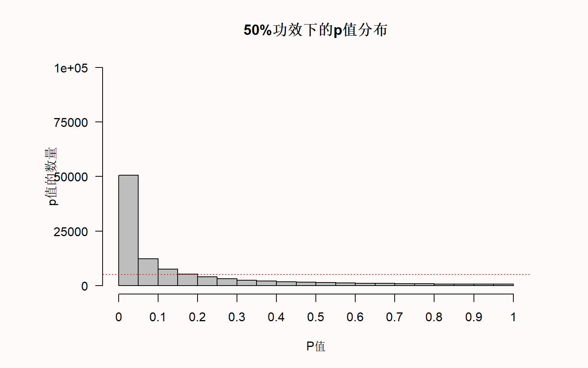
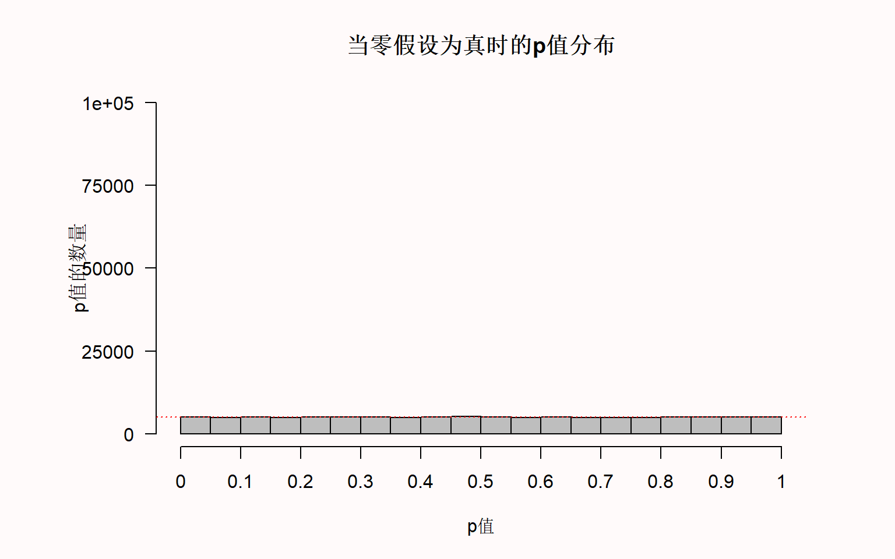
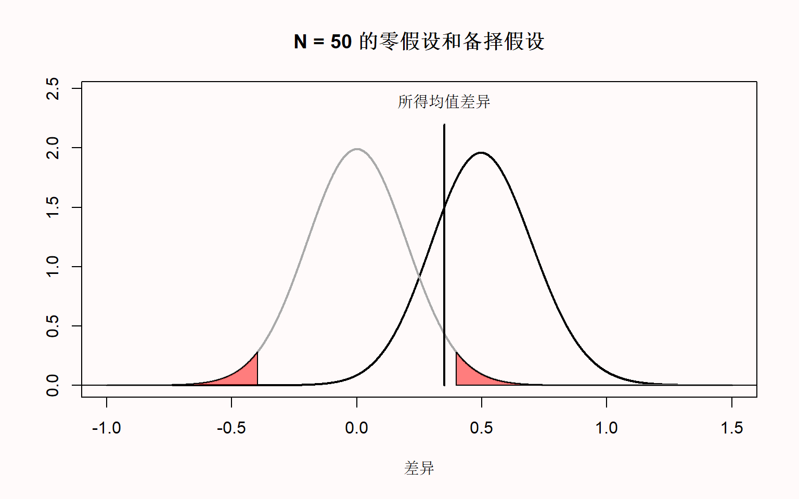
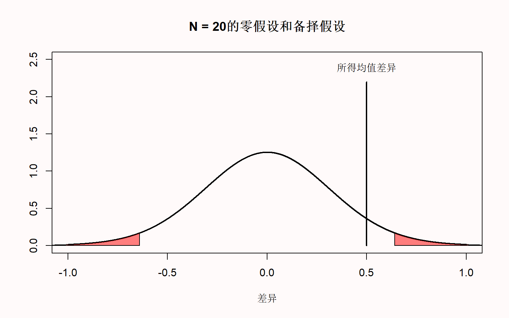
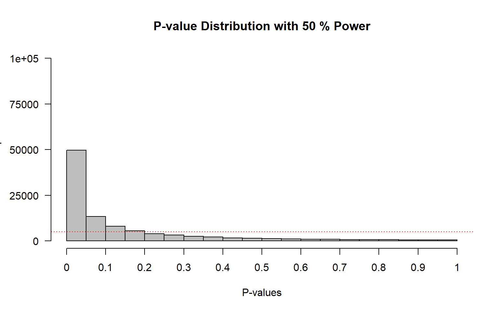

| Daniel的朋友 | Kyra的朋友 | |
|---|---|---|
| friend_1 | 9 | 9 |
| friend_2 | 7 | 6 |
| friend_3 | 8 | 7 |
| friend_4 | 9 | 8 |
| friend_5 | 8 | 7 |
| friend_6 | 9 | 9 |
| friend_7 | 9 | 8 |
| friend_8 | 10 | 8 |
| friend_9 | 9 | 8 |
| friend_10 | 9 | 7 |
使用 p值进行假设检验
研究者们可以通过收集数据来回答各种研究问题。他们感兴趣的是在不同条件下所收集到的数据结果是否有所差异。对于这个问题的答案是一个 方向性检验（ordinal claim）, 因为研究者对数据结果进行两两比较时，其平均值可能有大有小也可能没有差异。例如，研究者可能对这样的假设感兴趣：“假设条件A为：学生在进行了充分的学习后进行测试，条件B为学生将花费全部精力用于学习而进行测试，相对条件B来说，条件A的学习成果可能会更优异。在收集数据并得出有测试的学生的平均成绩较高后，研究者可以提出一个有方向性的假设，即与条件B相比，条件A的学生成绩更好。方向性假设仅能说明条件之间存在一定差异，但不能量化效应大小。
Scientists can attempt to answer a wide range of questions by collecting data. One question that interests scientists is whether measurements that have been collected under different conditions differ, or not. The answer to such a question is an ordinal claim, where a researcher states the average of the measurements is larger, or smaller, or the same, when comparing conditions. For example, a researcher might be interested in the hypothesis that students learn better if they do tests, during which they need to retrieve information they have learned (condition A), compared to not getting tests, but spending all of their time studying (condition B). After collecting data, and observing that the mean grade is higher for students who spent part of their time doing tests, the researcher can make the ordinal claim that student performance was better in condition A compared to condition B. Ordinal claims can only be used to state there is a difference between conditions. They do not quantify the size of the effect.
为了做出方向性检验，研究者通常依靠著名的假设检验的方法。 假设检验的一个部分包括计算p值， 并检验p值是否存在统计学上的显著差异。“显著”意味着某些东西是值得关注的。假设检验用于区分实证数据中的信号（值得关注的）和随机噪音。我们需要区分的是统计学显著以及实际效应显著，前者仅说明观察到的效应是信号还是噪点，而后者取决于效应的大小是否足够大，以便在现实生活中做出有价值的推断。因此，研究者们采用这种方法论的程序来决定是否做出差异性说明，或者作为一种防止验证性偏差的保障。在吉尼斯啤酒厂的内部报告中曾应用过上述统计检验方法，William Gosset（或称“student”，他开发了t检验）在1904年写道 [-@gosset_application_1904]：
It is worth distinguishing statistical significance, which is only used to claim whether an observed effect is a signal or noise, from practical significance, which depends on whether the size of the effect is large enough to have any worthwhile consequences in real life. Researchers use a methodological procedure to decide whether to make an ordinal claim or not as a safeguard against confirmation bias. In an internal report for Guinness brewery on the use of statistical tests in an applied setting, William Gosset (or ‘Student’, who developed the t-test) already wrote [-@gosset_application_1904]:
一般来说，人们普遍会认为将实验结果的决定权全权交由研究者是相对危险的，因为他们可能带有一定偏见。因此，有人建议采用一个标量作为评判标准，这个标量是在一定数量的数据集中出现重大误差的概率。
On the other hand, it is generally agreed that to leave the rejection of experiments entirely to the discretion of the experimenter is dangerous, as he is likely to be biassed. Hence it has been proposed to adopt a criterion depending on the probability of such a wide error occurring in the given number of observations.
然而根据这种期望，研究者们可能开始倾向于将数据解释为对其假设的支持，即便数据并不是这样。研究者提出差异性说明时，如果假设检验方法使用得当，是可以有效控制研究者自欺欺人的。正如Benjamini（2016） 所提出的，在区分信号和噪点时，p值是作为防止被随机因素诱导的第一道防线。有迹象表明，禁止使用p值将会使得研究者更容易做出错误结论。针对《基础与应用社会心理学》期刊施行禁止零假设（即无效应）显著之后，人们对后续发表的研究进行了定性分析，其中Fricker（2019）等人认为，相对于使用假设检验，且采用p < 0.05来说，当研究者仅用描述性统计时，我们发现他们很可能会过度解释和/或夸大他们的结果。研究者提出差异性说明时，如果假设检验方法使用得当，是可以有效控制研究者自欺欺人的。
Depending on their desires, scientists might be tempted to interpret data as support for their hypothesis, even when it is not. A hypothesis test, when used correctly, controls the amount of time researchers will fool themselves when they make ordinal claims.
关于p值的一些迷思Philosophical approaches to p-values
在我们厘清p值是如何计算之前，更重要是需要弄清在假设检验时，它将如何帮助我们做出合理的差异性说明。p值的定义是当零假设为真时，所得到的样本数据或更极端数据的概率。但是这个定义并未告诉我们该如何解释p值。
Before we look at how p-values are computed, it is important to examine how they are supposed to help us make ordinal claims when testing hypotheses. The definition of a p-value is the probability of observing the sample data, or more extreme data, assuming the null hypothesis is true. But this definition does not tell us much about how we should interpret a p-value.
对于p值的解释方式取决于个人的统计思想。从Ronald Fisher1925年发表了《研究者统计方法论》一书之后，p值的应用开始广泛起来。在Fisherian的理论框架中，p值被描述为一个连续测量，这个测量用于描述所得观察数据以及与零假设之间的兼容性 [@greenland_statistical_2016]。兼容性的区间在1（完全兼容）到0（完全不兼容）之间，且每个人都可以以一种统计上的“深思熟虑”来解释p值。依据Fisher [-@fisher_statistical_1956]所述，p值并不意味着真实世界的某个概率，而是以一种合理且完备的形式，来衡量拒绝他们所期望的假设的程度。Fisher试图将他的理念标化为一种”基础推论”，但这并没有得到其他流派的广泛采纳，如决策理论、似然比检验和贝叶斯推理。事实上，Zabell [-@zabell_r_1992] 写道：”基础推论“是Fisher的一个巨大失败”，尽管其他人表示希望它在未来会发展成一个有用的方法 [@schweder_confidence_2016]。Fisherian的p值描述了数据与单一假设的不兼容性，因此又被称为显著性检验。显著性检验受到限制的主要原因是，研究者只指定了一个零假设（\(H_0\)），而没有指定备择假设（\(H_1\)）。
The interpretation of a p-value depends on the statistical philosophy one subscribes to. Ronald Fisher published ‘Statistical Methods for Research Workers’ in 1925 which popularized the use of p-values. In a Fisherian framework a p-value is interpreted as a descriptive continuous measure of compatibility between the observed data and the null hypothesis [@greenland_statistical_2016]. The compatibility of observed data with the null model falls between 1 (perfectly compatible) and 0 (extremely incompatible), and every individual can interpret the p-value with “statistical thoughtfulness”. According to Fisher [-@fisher_statistical_1956], p-values “do not generally lead to any probability statement about the real world, but to a rational and well-defined measure of the reluctance to accept the hypotheses they test”. Fisher tried to formalize his philosophy in an approach called ‘fiducial inference’, but this has not received the same widespread adoption of other approaches, such as decision theory, likelihoods, and Bayesian inference. Indeed, Zabell [-@zabell_r_1992] writes “The fiducial argument stands as Fisher’s one great failure”, although others have expressed the hope that it might be developed into a useful approach in the future [@schweder_confidence_2016]. A Fisherian p-value describes the incompatibility of the data with a single hypothesis, and is known as significance testing. The main reason a significance test is limited is because researchers only specify a null hypothesis (\(H_0\)), but not the alternative hypothesis (\(H_1\)).
Neyman和Pearson [-@neyman_on_1933] 在William Gosset和Ronald Fisher关于P值的见解的基础上，发展了一种叫做统计假设检验的方法。与Fisher提出的显著性检验相比，其主要区别是，在统计假设检验中，既制定了一个零假设，也规定了一个备选假设。在Neyman-Pearson的理论框架中，统计检验的目标是引导研究者在这两个假设方向上的的决策。根据统计检验的结果，当不知道假设是否为真的情况下，研究者通常暂时将零假设或备则假设为真。在心理学领域，研究者经常使用Fisherian和Neyman-Pearson二者理论框架的不完美结合版，但根据Dienes [-@dienes_understanding_2008] 的说法，Neyman-Pearson的理论方法是 “你在心理学学术期刊中看到的所有数据统计的基础逻辑”。
Neyman and Pearson built on insights about p-values by William Gosset and Ronald Fisher, and developed an approached called statistical hypothesis testing. The main difference with the significance testing approach developed by Fisher was that in a statistical hypothesis test both a null hypothesis and an alternative hypothesis is specified. In a Neyman-Pearson framework, the goal of statistical tests is to guide the behavior of researchers with respect to these two hypotheses. Based on the results of a statistical test, and without ever knowing whether the hypothesis is true or not, researchers choose to tentatively act as if the null hypothesis or the alternative hypothesis is true. In psychology, researchers often use an imperfect hybrid of the Fisherian and Neyman-Pearson frameworks, but the Neyman-Pearson approach is, according to Dienes [-@dienes_understanding_2008] “the logic underlying all the statistics you see in the professional journals of psychology”.
当进行Neyman-Pearson假设检验时，所得p值只是用于对比是否小于所选的\(\alpha\)水平，但它小多少并不重要。例如，如果使用0.01的\(\alpha\)水平，p=0.006和p=0.000001都会使研究者迅速做出论断，仿佛世界的真理就是备择假设所描述的。这与Fisherian的p值方法不同，Fisherian的p值越低，研究者在心理上更加容易拒绝他们所检验的零假设。Neyman-Pearson的假设检验不认为推论的目标是量化兼容性或依据的一种连续测量。相反，正如Neyman [-@neyman_inductive_1957] 所写的：
When a Neyman-Pearson hypothesis test is performed, the observed p-value is only used to check if it is smaller than the chosen alpha level, but it does not matter how much smaller it is. For example, if an alpha level of 0.01 is used, both a p = 0.006 and a p = 0.000001 will lead researchers to decide to act as if the state of the world is best described by the alternative hypothesis. This differs from a Fisherian approach to p-values, where the lower the p-value, the greater the psychological reluctance of a researcher to accept the null hypothesis they are testing. A Neyman-Pearson hypothesis test does not see the goal of an inference as quantifying a continuous measure of compatibility or evidence. Instead, as Neyman [-@neyman_inductive_1957] writes:
当我们对行为做出总结归纳时，应当承认每个正经研究的目的，都是在几个可选方案中为某一个方案提供依据。The content of the
concept of inductive behavior is the recognition that the purpose of every piece of serious research is to provide grounds for the selection of one of several contemplated courses of action.
简洁了当点说，人们可能会觉得在做某一行为的决策时，不应该拘泥于单一的统计测试结果，这一点经常被提出来作为对Neyman-Pearson统计推断方法的批评。然而，这种批评与Neyman所说的 “行为”的定义不径相同。诚然，实施一项新政策的决策不应基于单一的研究结果。然而，Neyman认为提出科学主张也是一种 “行为”，他曾写道（1957年，第10页），一项研究的结论阶段包括：
Intuitively, one might feel that decisions about how to act should not be based on the results of a single statistical test, and this point is often raised as a criticism of a Neyman-Pearson approach to statistical inferences. However, such criticisms rarely use the same definition of an ‘act’ as Neyman used. It is true that, for example, the decision to implement a new government policy should not be based on a single study result. However, Neyman considered making a scientific claim an ‘act’ as well, and wrote (1957, p. 10) that the concluding phase of a study involves:
一种行为意愿或对某一行动的决策，也许就是对各种假设采取特定的态度。
an act of will or a decision to take a particular action, perhaps to assume a particular attitude towards the various sets of hypotheses
Cox [-@cox_problems_1958] 写道:
可以这么说：当进行推论时，我们就是”决定”对总体进行某种类型的陈述，因此，只要不对决定一词进行过于狭义的解释，那么研究的统计决策就包含了推论的过程。其实重点是，统计推断的主要问题在于决定哪些类型的声明是有意义的，以及它们到底意味着什么。
it might be argued that in making an inference we are ‘deciding’ to make a statement of a certain type about the populations and that therefore, provided that the word decision is not interpreted too narrowly, the study of statistical decisions embraces that of inference. The point here is that one of the main general problems of statistical inference consists in deciding what types of statement can usefully be made and exactly what they mean.
因此，在Neyman-Pearson的方法中，p值就是意味着需要对哪类声明进行决策的基础。在科研中，类似的声明通常是以辅助假设的形式支撑着大多数新兴实验，或者说，为了使实验按计划进行，一些基础假设的提出必须是准确的 [@hempel_philosophy_1966]。例如，如果设计的实验中，被试能看到颜色是很重要的，我们的基础假设就是Ishihara test（一种色盲测试）能够成功识别哪些被试是色盲，且这个假设为真。
Thus, in a Neyman-Pearson approach, p-values form the basis of decisions about which claims to make. In science, such claims underly most novel experiments in the form of auxiliary hypotheses, or the assumptions about underlying hypotheses that are assumed to be accurate in order for a test to work as planned. For example, if it is important that participants can see color in a planned experiment, we assume it is true that the Ishihara test successfully identifies which participants are colorblind.
建立一个零模型Creating a null model
假设每组10人，一共有两组，我问他们有多喜欢《指环王》（LOTR）三部曲的加长版。这意味着我们的总样本量是20，每组的样本量为10。第一组的被试包括了我的朋友，而第二组的被试包括了我妻子的朋友。我们的朋友对问题进行了1~10的评分。因此，我的朋友们那组是8.7，我妻子朋友的那组均值是7.7。我们可以通过查阅原始数据以及绘制相关图表对两组数据进行比较。
Assume I ask two groups of 10 people how much they liked the extended directors cut of the Lord of the Rings (LOTR) trilogy. This means our total sample size (N) is 20, and the sample size in each group (n) is 10. The first group consists of my friends, and the second groups consists of friends of my wife. Our friends rate the trilogy on a score from 1 to 10. We can calculate the average rating by my friends, which is 8.7, and the average rating by my wife’s friends, which is 7.7. We can compare the scores in both groups by looking at the raw data, and by plotting the data.

我们可以看到两组人的数据是重叠的，但平均评分却相差1整分。所以，我们现在面临的问题如下： 两组之间的差异只是随机误差，还是说我的朋友比我妻子的朋友更喜欢《指环王》（LOTR）三部曲的加长版？
We can see the groups overlap but the mean ratings differ by 1 whole point. The question we are now faced with is the following: Is the difference between the two groups just random variation, or can we claim that my friends like the extended directors cut of the Lord of the Rings (LOTR) trilogy more than my wife’s friends?
在零假设的显著性检验中，我们试图量化所观察到的差异（这时的均值相差1）或更极端差异的概率来回答这个问题，但这个前提是我的朋友和我妻子的朋友对《指环王》加长版的喜好程度并没有真正的差异，而我们只是在察看随机差异。这个概率称为p值。如果这个概率足够低，那我们就可以说存在差异，如果这个概率不够低，那我们只能说不存在差异。
In a null hypothesis significance test we try to answer this question by calculating the probability of the observed difference (in this case, a mean difference of 1) or a more extreme difference, under the assumption that there is no real difference between how much my friends and my wife’s friends like the extended directors cut of LOTR, and we are just looking at random noise. This probability is called the p-value. If this probability is low enough, we decide to claim there is a difference. If this probability is not low enough, we refrain from making a claim about a difference.
零假设假定如果询问了无限多的朋友（我的朋友以及和我妻子的朋友两个组）他们有多喜欢指环王，这两个海量的群组之间的差异为0。然而，从任何总体中抽取某一样本，随机误差通常不为0。我们可以建立一个零模型来衡量所得观测数据的期望误差，如果只有随机误差，那就可以知道合理的期望将会是如何，即当总体之间没有实质差异时，组间的随机误差有多大。
The null hypothesis assumes that if we would ask an infinite number of my friends and an infinite number of my wife’s friends how much they like LOTR, the difference between these huge groups is exactly 0. However, in any sample drawn from the population, random variation is very likely to lead to a difference somewhat larger or smaller than 0. We can create a null model that quantifies the expected variation in the observed data, just due to random noise, to tell us what constitutes a reasonable expectation about how much the differences between groups can vary if there is no difference in the population.
使用标准化分布来建立一个零模型是很便捷的，因为这样计算某一值的概率相对更容易，且不用考虑其余维度。有一个衡量差异的零模型是t分布，它可以用于描绘从总体抽样时的差异情况。有一个衡量差异的零模型是t分布，它可以用于描绘从总体抽样时的差异情况。这种零模型是建立在某种假设之上的。在t分布的情况下，这个假设的分布属于正态分布。然而事实上，依据统计方法所提出的假设从来没有得到过完美的匹配，所以，这就是为什么统计学家们在探索违反假设对方法论的影响。当违反假设对统计推断的影响足够小时，那么统计检验的方法仍然是有效且实用的。
It is practical to create a null model in terms of a standardized distribution, as this makes it easier to calculate the probability that specific values will occur, regardless of the scale that is used to collect the measurements. One version of a null model for differences is the t-distribution, which can be used to describe which differences should be expected when drawing samples from a population. Such a null model is built on assumptions. In the case of the t-distribution, the assumption is that scores are normally distributed. In reality, the assumptions upon which statistical methods are built are never met perfectly, which is why statisticians examine the impact of violations of assumptions on methodological procedures. Statistical tests are still useful in practice when the impact of violations on statistical inferences is small enough.
我们可以通过概率密度函数来衡量当总体中不存在差异时的预期t值分布。下面是一个自由度（df）为18的t分布的概率密度函数图，它与我们的例子一致，即对应我们从20个朋友那里收集的数据（df=N-2，两个独立组）。对于连续分布来说，概率是由无限多的点定义的，任何一个点的概率（例如，t=2.5）总是零。概率是按区间测量的。因此，计算的p值并不是所得观测数据（即某一点）的概率，而是所得观测数据或更极端数据（即一个区间）的概率。这就形成了一个可以计算面积的概率区间。
We can quantify the distribution of t-values that is expected when there is no difference in the population by a probability density function. Below is a plot of the probability density function for a t-distribution with 18 degrees of freedom (df), which corresponds to our example where we collect data from 20 friends (df = N - 2 for two independent groups). For a continuous distribution, where probabilities are defined for an infinite number of points, the probability of observing any single point (e.g., t = 2.5) is always zero. Probabilities are measured over intervals. For this reason, when a p-value is computed, it is not defined as ‘the probability of observing the data’, but as ‘the probability of observing the data, or more extreme data’. This creates an interval (a tail of a distribution) for which a probability can be calculated.
计算p值Calculating a p-value
t值可以用样本均值、总体均值、样本的标准差和样本大小来计算。然后计算所得观测数据或更极端数据的t值概率，我们就得到了p值。将上述两组朋友的电影评分进行对比，依据双侧t检验可得到的t值为2.5175，p值为0.02151。
A t-value can be computed from the mean in the sample, the mean in the population, the standard deviation in the sample, and the sample size. By then computing the probability of observing a t-value as extreme or more extreme as the one observed, we get a p-value. For the comparison of the movie ratings for the two groups of friends above, performing a two-sided Student’s t-test yields a t-value of 2.5175 and a p-value of 0.02151.
t.test(df_long$rating ~ df_long$`Friend Group`, var.equal = TRUE)
Two Sample t-test
data: df_long$rating by df_long$`Friend Group`
t = 2.5175, df = 18, p-value = 0.02151
alternative hypothesis: true difference in means between group Daniel的朋友 and group Kyra的朋友 is not equal to 0
95 percent confidence interval:
0.1654875 1.8345125
sample estimates:
mean in group Daniel的朋友 mean in group Kyra的朋友
8.7 7.7 我们可以绘制出t分布图（df=18），并高亮了t值为2.5175和-2.5175的两个尾部区域。
We can graph the t-distribution (for df = 18) and highlight the two tail areas that start at the t-values of 2.5175 and -2.5175.
(ref:tdistlab) A t-distribution with 18 degrees of freedom.

哪个是你想要的p值Which p-values can you expect?
有一个非常有教学意义的视频叫“p值之舞”，Geoff Cumming觉得p值因实验的不同而有所差异。然而，这并不是他在视频中提到的 “不信任p值”的理由。相反，他认为重要的是要清楚地了解p值是如何分布的，以防止误用。因为p值是统计中频率学派的部分，我们需要研究的是从长远来看能预期得到什么。因为我们永远不会成千上万次的做一个实验，而且我们也无法将所有的时间精力投入至研究中，所以最好的办法就是通过计算模拟求得一个长远的结果。
In a very educational video about the ‘Dance of the p-values’, Geoff Cumming explains that p-values vary from experiment to experiment. However, this is not a reason to ‘not trust p’ as he mentions in the video. Instead, it is important to clearly understand p-value distributions to prevent misconceptions. Because p-values are part of frequentist statistics, we need to examine what we can expect in the long run. Because we never do the same experiment hundreds of times, and we do only a very limited number of studies in our lifetime, the best way to learn about what we should expect in the long run is through computer simulations.
请大家花一些时间思考一下两个问题。如果效应真实存在，并且你重复这个实验成千上万次了，你可能会得到一个什么样的p值？同样，如果效应并不存在，你也同样重复这个实验成千上万次了，你又会得到什么样的p值？如果你不知道答案也没有关系，你现在就能学会。如果你不知道答案，或许应该值得反思一下，为什么并不了解p值的基本知识。如果你和我一样，根本没有被教过这个。但正如我们将看到的，这对巩固理解p值该如何解释至关重要。
Take a moment to try to answer the following two questions. Which p-values can you expect to observe if there is a true effect, and you repeat the same study one-hundred thousand times? And which p-values can you expect if there is no true effect, and you repeat the same study one-hundred thousand times? If you don’t know the answer, don’t worry - you will learn it now. But if you don’t know the answer, it is worth reflecting on why you don’t know the answer about such an essential aspect of p-values. If you are like me, you were simply never taught this. But as we will see, it is essential to a solid understanding of how to interpret p-values.
你能期望的p值完全由研究的统计功效决定，或者说，如果效应真实存在，你将得到显著效应的概率。统计功效的范围在0~1。我们可以通过模拟独立t检验来说明这一点。比如说，我们来模拟一群人的智商分数。我们知道智商的标准差是15。现在，我们假设某个样本组的平均智商为100，而另一个组为105。随后，我们来检验这两组人的IQ是否不一致（但是我们知道正确答案是“是”，因为我们就是这么模拟的数据）。
Which p-values you can expect is completely determined by the statistical power of the study, or the probability that you will observe a significant effect, if there is a true effect. The statistical power ranges from 0 to 1. We can illustrate this by simulating independent t-tests. The idea is that we simulate IQ scores for a group of people. We know the standard deviation of IQ scores is 15. For now, we will set the mean IQ score in one simulated group to 100, and in the other simulated group to 105. We are testing if the people in one group have an IQ that differs from the other group (and we know the correct answer is ‘yes’, because we made it so in the simulation).
p <- numeric(100000) # store all simulated *p*-values
for (i in 1:100000) { # for each simulated experiment
x <- rnorm(n = 71, mean = 100, sd = 15) # Simulate data
y <- rnorm(n = 71, mean = 105, sd = 15) # Simulate data
p[i] <- t.test(x, y)$p.value # store the *p*-value
}
(sum(p < 0.05) / 100000) # compute power
hist(p, breaks = 20) # plot a histogram在模拟时，我们生成了一个关于IQ分数的正态分布（n = 71，均值M=100或105），标准差=15）。然后我们进行独立t检验，求得p值，并生成p值分布图。
In the simulation, we generate n = 71 normally distributed IQ scores with means of M (100 and 105 by default) and a standard deviation of 15. We then perform an independent t-test, store the p-value, and generate a plot of the p-value distribution.
(ref:pdist1lab) Distribution of p-values when power = 50%.

我们可以看到x轴是20个条形柱分别代表着从0到1的p值，Y轴则是这些p值的频率。水平的红色虚线表示5%的\(\alpha\)（位于100.000*0.05=5000的频率），但你现在可以忽略这条线。图表的标题给出了模拟研究的统计功效（假设\(\alpha\)为0.05时）： 这项研究有50%的功效。
On the x-axis we see p-values from 0 to 1 in 20 bars, and on the y-axis we see how frequently these p-values were observed. There is a horizontal red dotted line that indicates an alpha of 5% (located at a frequency of 100.000*0.05 = 5000) – but you can ignore this line for now. In the title of the graph, the statistical power that is achieved in the simulated studies is given (assuming an alpha of 0.05): The studies have 50% power.
模拟的结果描绘了p值的概率密度函数。概率密度函数给出了在t分布中，某个特定值(比如如图@ref(fig:tdist)那样)的随机变量的概率。因为p值是一个随机变量，我们可以用它的概率密度函数来绘制p值分布图[@hung_behavior_1997; @ulrich_properties_2018]，如图@ref(fig:pdft）。在线上的Shiny应用程序中，你可以改变样本大小、效应量大小和\(\alpha\)水平，以便观察他们对p值分布的影响。增加样本量或效应量大小将增加p值分布的陡峭程度，这意味着观察到小p值的概率增加。p值分布是检验的统计功效的函数。
The simulation result illustrates the probability density function of p-values. A probability density function provides the probability that a random variable has a specific value (such as Figure @ref(fig:tdist) of the t-distribution). Because the p-value is a random variable, we can use its probability density function to plot the p-value distribution [@hung_behavior_1997; @ulrich_properties_2018], as in Figure @ref(fig:pdft). In this online Shiny app you can vary the sample size, effect size, and alpha level to examine the effect on the p-value distribution. Increasing the sample size or the effect size will increase the steepness of the p-value distribution, which means that the probability to observe small p-values increases. The p-value distribution is a function of the statistical power of the test.
(ref:pdftlab) Probability density function for p-values from a two-sided t-test.

当效应不存在时，p值是均匀分布的。这意味着，当零假设为真时，每一个p值都有同样的可能性被观察到。换句话说，当不存在真正的效应时，0.08的p值和0.98的p值含义一样。我记得当我第一次了解到均匀的p值分布时，我觉得这非常反常（远在完成我的博士学位之上）。但是如果保证零假设为真，p值永远大于我们所设定的\(\alpha\)水平时，那么p值为均匀分布似乎又是合理的。如果我们把\(\alpha\)水平设为0.01，1%的概率观察到的p值小于0.01，如果我们把\(\alpha\)水平设置为0.12，12%的概率观察到p值小于0.12。但是，这只有在零假设（\(H_0\)）为真时，p值是均匀分布的情况下才会发生这种情况。
When there is no true effect, p-values are uniformly distributed. This means that every p-value is equally likely to be observed when the null hypothesis is true. In other words, when there is no true effect, a p-value of 0.08 is just as likely as a p-value of 0.98. I remember thinking this was very counterintuitive when I first learned about uniform p-value distributions (well after completing my PhD). But it makes sense that p-values are unifromly distributed when we think about the goal to guarantee that when \(H_0\) is true, alpha % of the p-values should fall below the alpha level. If we set alpha to 0.01, 1% of the observed p-values should fall below 0.01, and if we set alpha to 0.12, 12% of the observed p-values should fall below 0.12. This can only happen if p-values are uniformly distributed when the null hypothesis is true.
(ref:pdist2lab) Distribution of p-values when the null hypothesis is true.

林德利悖论Lindley’s paradox
随着统计功效的提高，一些稍微低于0.05的p值（如p=0.04），相比于有效应，它更可能在没有效应时出现。这就是著名的林德利悖论 [@lindley_statistical_1957]，或称杰弗里-林德利悖论 [@spanos_who_2013]。因为p值的分布是统计功效的函数 [@cumming_replication_2008]，功效越高，p值的分布就越右偏（即越有可能观察到小的p值）。当不存在真实的效应时，p值是均匀分布的，1%的概率可以观察到p值在0.04和0.05之间。当统计功效极高时，不仅大多数p值会低于0.05，甚至会低于0.01。通过图@ref(fig:paradox)我们可以看到，在高功效下，当效应真实存在时，非常小的p值（例如0.001）就比无效应时更容易被观察到（例如，当P值为0.01时，代表99%功效的黑色虚线落在灰色水平线之上，这时灰色曲线代表着零假设为真时p值的均匀分布）。
As the statistical power increases, some p-values below 0.05 (e.g., p = 0.04) can be more likely when there is no effect than when there is an effect. This is known as Lindley’s paradox [@lindley_statistical_1957], or sometimes the Jeffreys-Lindley paradox [@spanos_who_2013]. Because the distribution of p-values is a function of the statistical power [@cumming_replication_2008], the higher the power, the more right-skewed the p-value distribution becomes (i.e., the more likely it becomes that small p-values are observed). When there is no true effect, p-values are uniformly distributed, and 1% of observed p-values fall between 0.04 and 0.05. When the statistical power is extremely high, not only will most p-values fall below 0.05, most p-values will fall below 0.01. In Figure @ref(fig:paradox) we see that with high power very small p-values (e.g., 0.001) are more likely to be observed when there is an effect than when there is no effect (e.g., the dotted black curve representing 99% power falls above the grey horizontal line representing the uniform distribution when the null is true for a p-value of 0.01).
然而令人迷惑的是，当p值为0.04时，则更可能是没有效应，即零假设（\(H_0\)）为真时，我们任然可以有非常高的功效，例如在图@ref(fig:paradox)中所示，当p等于0.04时，零假设为真时的p值分布的密度要比99%功效时要高。所以，林德利悖论说明，0.04的p值可能在统计学上是显著的，但同时也为零假设提供了一定证据。从Neyman-Pearson的方法来看，我们将提出一个最大错误率为5%的概念，但从似然比或贝叶斯的方法来看，我们可以得出某种结论是：相对于备择假设，我们的数据信息提供了有利于零假设的证据。林德利悖论说明了不同的统计学派何时会得出不同的结论，以及在不考虑检验统计功效的情况下，为什么p值不能直接被解释为结论的衡量标准。虽然可能没有必要，但研究者可能希望避免下述情况：那就是频率学派的学者们会根据p<0.05拒绝零假设，但是当前检验的实验数据倾向于零假设而不是备择假设。这可以通过降低\(\alpha\)水平作一个样本量的函数来实现[@leamer_specification_1978；@maier_justify_2022；@good_bayesnon-bayes_1992]，这一点将在“误差的控制”一章节进行解释。
Yet perhaps surprisingly, observing a p-value of 0.04 is more likely when the null hypothesis (\(H_0\)) is true than when the alternative hypothesis (\(H_1\)) is true and we have very high power, as illustrated by the fact that in Figure @ref(fig:paradox) the density of the p-value distribution is higher when the null is true, than when a test has 99% power, at 0.04. Lindley’s paradox shows that a p-value of for example 0.04 can be statistically significant, but at the same time provides evidence for the null hypothesis. From a Neyman-Pearson approach we have made a claim that has a maximum error rate of 5%, but from a likelihood or Bayesian approach, we should conclude our data provides evidence in favor of the null hypothesis, relative to the alternative hypothesis. Lindley’s paradox illustrates when different statistical philosophies would reach different conclusions, and why a p-value cannot directly be interpreted as a measure of evidence, without taking the power of the test into account. Although it is not necessary, researchers might desire to prevent situations where a frequentist rejects the null hypothesis based on p < 0.05, when the evidence in the test favors the null hypothesis over the alternative hypothesis. This can be achieved by lowering the alpha level as a function of the sample size [@leamer_specification_1978; @maier_justify_2022; @good_bayesnon-bayes_1992], as explained in the chapter on error control.
(ref:paradoxlab) P-value distribution for 0 (grey horizontal line, 50 percent power (black solid curve), and 99 percent power (black dotted curve, where p-values just below 0.05 are more likely when \(H_0\) is true than when \(H_1\) is true).

正确地解释和报告p值Correctly reporting and interpreting p-values
虽然从严格的Neyman-Pearson方法的角度来看，报告p<\(\alpha\)或p>\(\alpha\)就足够了，但研究者还是应当报告确切的p值。这便于后续再次分析结果时使用 [@appelbaum_journal_2018]，也便于并其他研究者将p值与他们希望使用的\(\alpha\)水平进行比较 [@lehmann_testing_2005]。因为所发表的结论是使用已知最大误差率的方式进行的，p值永远不允许你肯定地陈述任何事情。即便我们把\(\alpha\)水平设定为0.000001，但任何一个结论都可能是错误的，Fisher [-@fisher_design_1935] 提醒我们，即使是”百万分之一的几率”仍旧会发生，既不低于也不高于其某个恰当的概率，但只要发生在我们身上就是0和1的概率，纵使我们会非常惊讶为什么如此小的概率仍会发生在我们身上”。这就是重复研究在科学领域很重要的原因。任何单一的发现都可能是一种侥幸，但如果几个重复的研究都能得到相同的结果，那么这种概率很快就会变得非常小。这种不确定性可能并没有反映在学术写作中，因为可以看到研究者会使用 “证明”、“显示”或 “已知”等字眼。在做完假设检验之后，有个稍长但更准确的说法是：
Although from a strict Neyman-Pearson perspective it is sufficient to report that p < \(\alpha\) or that p > \(\alpha\), researchers should report exact p-values. This facilitates the re-use of results for secondary analyses [@appelbaum_journal_2018], and allows other researchers to compare the p-value to an alpha level they would have preferred to use [@lehmann_testing_2005]. Because claims are made using a methodological procedure with known maximum error rates, a p-value never allows you state anything with certainty. Even if we set the alpha level to 0.000001 any single claim can be an error, Fisher [-@fisher_design_1935] reminds us, ‘for the “one chance in a million” will undoubtedly occur, with no less and no more than its appropriate frequency, however surprised we may be that it should occur to us”. This uncertainty is sometimes not reflected in academic writing, where researchers can be seen using words as ’prove’, ‘show’, or ‘it is known’. A slightly longer but more accurate statement after a hypothesis test would read:
我们宣称了一个有或没有意义的效应，但也同时承认，如果学者们使用这种方法论提出结论，从长远来看，他们最多只有在\(\alpha\)%或\(\beta\)%上被误导，我们认为这是可以接受的。在不久的将来，除非出现新的数据或信息证明我们是错的，否则我们将假定这一结论是正确的。
We claim there is a/no meaningful effect, while acknowledging that if scientists make claims using this methodological procedure, they will be misled, in the long run, at most alpha % or beta % of the time, which we deem acceptable. We will for the foreseeable future, until new data or information emerges that proves us wrong, assume this claim is correct.
请记住，在Neyman-Pearson的理论框架下，研究者提出某种说法，但是这些说法不一定是真实的。例如，OPERA合作组织在2011年报告说，他们所得到的观测数据似乎揭示了中微子的速度超过了光速。这一说法的第一错误率是百万分之0.2，假定错误纯粹是由随机误差造成的。然而，实际上并没有研究者相信这一说法是真的，因为理论上中微子的运动速度不可能超过光速。事实上，后来发现是由于设备故障所导致的数据异常：一根光纤的连接不当，还有一个时钟振荡器的走的过快。然而，在提出这一说法的同时也公开邀请学界提供新的数据或信息，来证明这一说法有误。
Remember that in a Neyman-Pearson framework researchers make claims, but do not necessarily believe in the truth of these claims. For example, the OPERA collaboration reported in 2011 that they had observed data that seemed to suggest neutrinos traveled faster than the speed of light. This claim was made with a with a 0.2-in-a-million Type 1 error rate, assuming the error was purely due to random noise. However, none of the researchers actually believed this claim was true, because it is theoretically impossible for neutrinos to move faster than the speed of light. Indeed, it was later confirmed that equipment failures were the cause of the anomalous data: a fiber optic cable had been attached improperly, and a clock oscillator was ticking too fast. Nevertheless, the claim was made with the explicit invitation to the scientific community to provide new data or information that would prove this claim wrong.
当学者们在Neyman-Pearson统计推断方法下”接受”或”拒绝”一个假设时，他们并没有表明任何关于假设的信念或结论。相反，他们宣称自己是基于预设规则（即观察到的数据反映了世界的某种状态）的一种波普尔式基本声明。这些基本声明描绘的是已经进行的观察（例如，“我观察到了一只黑天鹅”）或已经发生的事件（例如，“接受间隔练习训练的学生，比不接受训练的学生在考试中表现得更好”）。
When researchers “accept” or “reject” a hypothesis in a Neyman-Pearson approach to statistical inferences, they do not communicate any belief or conclusion about the substantive hypothesis. Instead, they utter a Popperian basic statement based on a prespecified decision rule that the observed data reflect a certain state of the world. Basic statements describe an observation that has been made (e.g., “I have observed a black swan”) or an event that has occurred (e.g., “students performed better at the exam when being trained in spaced practice, than when not”).
也就是说当下的某种声明与我们已经观测到的数据相关，但与我们用于预测的理论无关。某个声明与观测数据相关，因为它是一种统计推断，但它与理论无关，因为理论需要理论推断。数据永远无法“证明“一个理论是对还是错。一个基本声明可以证实一个从理论推导出来的预测，也可能无法证实。如果从一个理论中推导出的许多预测都得到了证实，我们就会越来越相信这个理论是接近真理的。这种理论的“接近真理性”叫做逼真性 [@niiniluoto_verisimilitude_1998; @popper_logic_2002]。报告假设检验时会出现的一个更短的声明是“p=.xx，即我们的预测在y%的α水平下得到证实，或者“p=.xx，即我们所关注的效应量在对应的统计检验力下，预测没有被证实”。\(\alpha\)水平或者统计检验力往往只在文章的实验设计部分被提及，但是在结果部分重复他们能够提醒读者注意与你的声明相关的错误率。
The claim is about the data we have observed, but not about the theory we used to make predictions. The claim is about observed data, as it is a statistical inference, and not about the theory, which requires a theoretical inference. Data never ‘proves’ a theory is true or false. A basic statement can corroborate a prediction derived from a theory, or not. If many predictions deduced from a theory are corroborated, we can become increasingly convinced the theory is close to the truth. This ‘truth-likeness’ of theories is called verisimilitude [@niiniluoto_verisimilitude_1998; @popper_logic_2002]. A shorter statement when a hypothesis test is presented would therefore read ‘p = .xx, which corroborates our prediction, at an alpha level of y%’, or ‘p = .xx, which does not corroborate our prediction, at a statistical power of y% for our effect size of interest’. Often, the alpha level or the statistical power is only mentioned in the experimental design section of an article, but repeating them in the results section might remind readers of the error rates associated with your claims.
甚至当我们做出正确的声明时，它的底层理论也可能是错误的。Popper [-@popper_logic_2002] 提醒我们“客观科学的实证基础并不是绝对的”。他争辩科学并不建立在坚固的基石之上，而是在沼泽中打下的木桩上，并指出“所以就目前而言，当确信桩的牢固程度足以承载结构后，我们就会停下来”。如Hacking [-@hacking_logic_1965] 写道：“拒绝不是反驳。多数拒绝只是试探性的”。所以当拒绝零模型时，我们是试探性的，并且知道有犯错的可能性，而不是一定要相信零模型是错的，以及我们用来进行预测的理论是对的。对Neyman [-@neyman_inductive_1957] 而言，推断行为是一种“遵循当前实验结果，以一种特定方式去造就未来（直到被新的实验所迭代）的意志。所有的科学知识都是暂时的。
Even when we have made correct claims, the underlying theory can be false. Popper [-@popper_logic_2002] reminds us that “The empirical basis of objective science has thus nothing ‘absolute’ basis about it”. He argues science is not built on a solid bedrock, but on piles driven in a swamp and notes that “We simply stop when we are satisfied that the piles are firm enough to carry the structure, at least for the time being.” As Hacking [-@hacking_logic_1965] writes: “Rejection is not refutation. Plenty of rejections must be only tentative.” So when we reject the null model, we do so tentatively, aware of the fact we might have done so in error, without necessarily believing the null model is false, and without believing the theory we have used to make predictions is true. For Neyman [-@neyman_inductive_1957] inferential behavior is an: “act of will to behave in the future (perhaps until new experiments are performed) in a particular manner, conforming with the outcome of the experiment”. All knowledge in science is provisional.
一些统计学家建议把p值解释成对证据的度量。例如，Bland [-@bland_introduction_2015] 提出p值可以被解释成一种对证据强度的“即粗略又完备”的指示，p > 0.1表示“很少或没有证据”，0.01 < p < 0.05表示“有证据”，p < 0.001表示“证据很强”。从前面关于林德利悖论和p值均匀分布的讨论中可以看出这是不正确的 [@johansson_hail_2011; @lakens_why_2022]。如果你想量化证据，请看关于似然性或贝叶斯统计的章节。
Some statisticians recommend interpreting p-values as measures of evidence. For example, Bland [-@bland_introduction_2015] teaches that p-values can be interpreted as a ‘rough and ready’ guide for the strength of evidence, and that p > 0.1 indicates ‘little or no evidence’, 0.01 < p < 0.05 indicates ‘evidence’, p < 0.001 is ‘very strong evidence’. This is incorrect [@johansson_hail_2011; @lakens_why_2022], as is clear from the previous discussions of Lindley’s paradox and uniform p-value distributions. If you want to quantify evidence, see the chapters on likelihoods or Bayesian statistics.
Preventing common misconceptions about p-values
p值是在零假设为真的情况下，实际观测到的数据的概率或者临界值的概率。为了理解p值能说明什么，我们尤其要注意p值不能说明什么。首先，我们需要知道”零假设为真”是什么，以及当零假设为真时，数据的分布形态是怎样的。尽管零假设可以被设定为任意数值，在这里我们规定零假设就是均两组值差异为0。例如，在实验条件下和控制条件下计算两组因变量的差异。
A p-value is the probability of the observed data, or more extreme data, under the assumption that the null hypothesis is true. To understand what this means, it might be especially useful to know what this doesn’t mean. First, we need to know what ‘the assumption that the null hypothesis is true’ looks like, and which data we should expect if the null hypothesis is true. Although the null hypothesis can be any value, in this assignment we will assume the null hypothesis is specified as a mean difference of 0. For example, we might be interested in calculating the difference between a control condition and an experimental condition on a dependent variable.
区分零假设（假设在总体中平均值差异正好为0）和零模型（当零假设为真时，我们应该观察得到的数据模型）非常重要。零假设是一个位于0的点，而零模型则是一个分布。在教科书或者统计分析软件中，它门被可视化，可能会出现下面这样的图片。你可以看到，横轴代表t值，并且临界值t在1.96-2.00之间（取决于样本量）。之所以用t值，是因为比较两组差异的统计检验是基于t分布的，当实际得到的t值大于临界值t时，我们就认为p值在统计上显著。
It is useful to distinguish the null hypothesis (the prediction that the mean difference in the population is exactly 0) and the null model (a model of the data we should expect when we collect data when the null hypothesis is true). The null hypothesis is a point at 0, but the null model is a distribution. It is visualized in textbooks or power analysis software using pictures as you can see below, with t-values on the horizontal axis, and a critical t-value somewhere between 1.96 – 2.00 (depending on the sample size). This is done because the statistical test when comparing two groups is based on the t-distribution, and the p-value is statistically significant when the t-value is larger than a critical t-value.
我个人认为，如果绘制的零模型是均值差的而非t值的，解释起来会更加清楚。所以在下方，你会看见当比较样本量为50的两组数据时，均值差的零模型，假设它们的真实差异为0，两组的标准差均为1。因为它们的标准差为1，你也可以把均值差异解释为科恩d效应量。所以，这也是样本量为50的样本在做独立样本t检验，科恩d为0时的分布。
I personally find things become a lot clearer if you plot the null model as mean differences instead of t-values. So below, you can see a null model for the mean differences we can expect when comparing two groups of 50 observations where the true difference between the two groups is 0, and the standard deviation in each group is 1. Because the standard deviation is 1, you can also interpret the mean differences as a Cohen’s d effect size. So this is also the distribution you can expect for a Cohen’s d of 0, when collecting 50 observations per group in an independent t-test.
(ref:fig131lab) 在每组收集50个观察值的独立样本t检验中，所得Cohen’s d效应量的分布。
(ref:fig131lab) Distribution of observed Cohen’s d effect sizes when collecting 50 observations per group in an independent t-test.

首先要注意到的是，我们期望的零模型的平均值是0。观察X轴，我们可以看到绘制的分布是以0为中心的。但是，即使总体的均值差是0，这也不意味着每个从总体中抽出的样本的均值差都为0。样本的值会围绕总体的值变化，是一个标准差和样本量的函数。
The first thing to notice is that we expect that the mean of the null model is 0. Looking at the x-axis, we see the plotted distribution is centered on 0. But even if the mean difference in the population is 0 that does not imply every sample we draw from the population will give a mean difference of exactly zero. There is variation around the population value, as a function of the standard deviation and the sample size.
图中Y轴是概率密度，它代表的是连续分布中得到某一特定值的可能性。我们可以看到，最有可能得到的均值差是总体的真实值0，离0越远的值得到的可能性就越小。图中有两个区域标红了，这些区域代表分布的左尾部2.5%的极端值，以及分布的右尾部2.5%的极端值。它们共同构成了当真均值差恰好为0，样本量为50时，抽样分布的5%的极端值的区域。当测量的值落在这个区域，相应的统计检验就认为两组在5%的α水平上达到显著差异。换句话说，不超过5%的均值差是离0足够远，会被认为是小概率事件的。因为零假设为真，如果测量得到这种小概率的平均值差异，即红色区域，则是犯了1型错误。
The y-axis of the graph represents the density, which provides an indication of the relative likelihood of measuring a particular value of a continuous distribution. We can see that the most likely mean difference is the true population value of zero, and that larger differences from zero become increasingly less likely. The graph has two areas that are colored red. These areas represent 2.5% of the most extreme values in the left tail of the distribution, and 2.5% of the most extreme values in the right tail of the distribution. Together, they make up 5% of the most extreme mean differences we would expect to observe, given our number of observations, when the true mean difference is exactly 0. When a mean difference in the red area is observed, the corresponding statistical test will be statistically significant at a 5% alpha level. In other words, not more than 5% of the observed mean differences will be far enough away from 0 to be considered surprising. Because the null hypothesis is true, observing a ‘surprising’ mean difference in the red areas is a Type 1 error.
让我们假设上图中的零模型是正确的，并且我们测量得到两组之间的平均值差异为0.5。这种测量得到的差异落在分布右尾的红色区域。这意味着，在真实平均差值为0的假设下，测量得到的平均差值相是小概率事件。如果真实的平均差值为0，概率密度函数表明我们不应该测量得到平均差值为0.5。如果我们计算这个观测值的p值，它将低于5%。观测到距离0远至0.5(当我们做双尾检验时，要么在均值的左边，要么在均值的右边)的平均差异的概率小于5%。
Let’s assume that the null model in the Figure above is true, and that we observe a mean difference of 0.5 between the two groups. This observed difference falls in the red area in the right tail of the distribution. This means that the observed mean difference is relatively surprising, under the assumption that the true mean difference is 0. If the true mean difference is 0, the probability density functions shows that we should not expect a mean difference of 0.5 very often. If we calculate a p-value for this observation, it would be lower than 5%. The probability of observing a mean difference that is at least as far away from 0 as 0.5 (either to the left from the mean, or to the right, when we do a two-tailed test) is less than 5%.
我更喜欢用原始分数而不是t值来绘制零模型的另一个原因是，当样本量增加时，我们可以看到零模型是如何变化的。当我们收集5000个而不是50个观测值时，我们看到零模型仍然以0为中心——但在现在的零模型中，我们预计大多数值将非常接近0。
One reason why I prefer to plot the null model in raw scores instead of t-values is that you can see how the null model changes when the sample size increases. When we collect 5000 instead of 50 observations, we see the null model is still centered on 0 – but in our null model we now expect most values will fall very close around 0.
(ref:fig132lab) 当d=0时，在每组收集5000个观察值的独立样本t检验中，所得Cohen’s d效应量的分布。
(ref:fig132lab) Distribution of observed Cohen’s d effect sizes when collecting 5000 observations per group in an independent t-test when d = 0.

由于均值差的分布是基于均值差的标准误，所以5000样本量的分布要窄得多。这个值是根据标准差和样本量计算的，如下所示:
The distribution is much narrower because the distribution of mean differences is based on the standard error of the difference between means. This value is calculated based on the standard deviation and the sample size, as follows:
\[\sqrt{\frac{\sigma_{1}^{2}}{n_{1}}+\frac{\sigma_{2}^{2}}{n_{2}}}\] 这个公式表明，均值差的标准误是每个组的标准差（σ）的平方除以该组的样本量，加在一起，然后取平方根。样本量越大，除以的数字就越大，因此均值差的标准误就越小。在n =50的例子中，有标准差:
This formula shows that the standard deviations of each group (σ) are squared and divided by the sample size of that group, added together, after which the square root is taken. The larger the sample size the bigger the number we divide by, and thus the smaller standard error of the difference between means. In our n = 50 example this is:
\[\sqrt{\frac{1^{2}}{50}+\frac{1^{2}}{50}}\] 因此，当n = 50时，两组均值差的标准误为0.2；当n = 5000时，均值差的标准误为0.02。假设抽样分布为正态分布，95%的观测值落在1.96 个标准误之间。因此，对于样本量为50的样本，均值差应该在-1.96 * 0.2 = -0.392和+1.96 * 0.2 = 0.392之间，我们可以看到，当n = 50时，红色区域大约从-0.392到0.392。对于样本量为5000的样本，均值差应在-1.96 * 0.02和+1.96 * 0.02之间，也就是说，应该介于-0.0392到0.0392之间。由于样本量较大（n = 5000），观测得到的均值差应该比较小样本（n=50）中观测得到的均值差更接近0.
The standard error of the differences between means is thus 0.2 for n = 50 in each group, and for n = 5000 it is 0.02. Assuming a normal distribution, 95% of the observations fall between 1.96 SE. So for 50 samples per group, the mean differences should fall between -1.96 * 0.2 = -0.392, and +1.96 * 0.2 = 0.392, and we can see the red areas start from approximately -0.392 to 0.392 for n = 50. For 5000 samples per group, the mean differences should fall between -1.96 * 0.02, and +1.96 * 0.02; in other words between -0.0392 to 0.0392 for n = 5000. Due to the larger sample size with n = 5000 observations per group, we should expect to observe mean differences in our sample closer to 0 compared to our null model when we had only 50 observations.
如果我们抽出n = 5000的样本，并且观测到0.5的均值差，我们要清楚，这样的概率比起收集50个观测值发现0.5的均值差的要更小。我们现在几乎已经准备好介绍关于p值的常见误解，但在此之前，我们需要引入一个当零假设不为真时的数据模型。如果我们不是从一个真实均值差为0的模型中抽样，那么得到的备择模型会是什么样呢？一些软件 （比如 G*power, 见 图 @ref(fig:gpowerscreenshot))会同时显示出零模型（红色曲线）和备择模型（蓝色曲线）:
If we collected n = 5000, and we would again observe a mean difference of 0.5, it should be clear that this same difference is even more surprising than it was when we collected 50 observations. We are now almost ready to address common misconceptions about p-values, but before we can do this, we need to introduce a model of the data when the null is not true. If we are not sampling data from a model where the true mean difference is 0, what does our alternative model look like? Some software (such as G*power, see Figure @ref(fig:gpowerscreenshot)) will visualize both the null model (red curve) and the alternative model (blue curve) in their output:
(ref:gpowerscreenshotlab) G*Power软件截图显示了零模型（红色分布）和备择模型（蓝色分布）以及区分显著和非显著结果的临界t值（1.66055）。
(ref:gpowerscreenshotlab) Screenshot from G*Power software visualizing the null model (red distribution) and alternative model (blue distribution) and the critical t-value (1.66055) that is the threshold distinguishing significant and non-significant results.

当我们做一项研究时，我们不知道真正的均值差是多少（如果我们已经知道了，为什么还要做这项研究?）但是，让我们假设有一个全知的存在，按照Paul Meehl的说法，我们称呼祂为”无所不知的琼斯”。在我们从总体里收集50个观测值之前，“无所不知的琼斯”就已经知道了总体的真实均值差为0.5。那么在备择模型中，均差值就应该在0.5周围变化。下图显示了零假设成立时的数据模式(用灰线表示)，和备择模型(用黑线表示)，即假设总体中存在0.5的真实均值差的模型。
When we do a study, we rarely already know what the true mean difference is (if we already knew, why would we do the study?). But let’s assume there is an all-knowing entity. Following Paul Meehl, we will call this all-knowing entity ‘Omniscient Jones’. Before we collect our sample of 50 observations, Omniscient Jones already knows that the true mean difference in the population is 0.5. Again, we should expect some variation around 0.5 in this alternative model. The figure below shows the expected data pattern when the null hypothesis is true (now indicated by a grey line) and it shows an alternative model, assuming a true mean difference of 0.5 exists in the population (indicated by a black line).
(ref:fig134lab) 在d = 0，每组收集50个观测值的独立样本t检验中，Cohen’s d效应量的分布。
(ref:fig134lab) Distribution of observed Cohen’s d effect sizes when collecting 50 observations per group in an independent t-test when d = 0.

但是”无所不知的琼斯”也可以说真实均值差是一个更大的值。假设在另一个研究中，在我们抽样之前，祂就说真实均值差是1.5。那么此时零假设模型不变，备择假设模型会向右移动。
But Omniscient Jones could have said the true difference was much larger. Let’s assume we do another study, but now before we collect our 50 observations, Omniscient Jones tells us that the true mean difference is 1.5. The null model does not change, but the alternative model now moves over to the right.
(ref:fig135lab) 在d = 0和d = 0.5，每组收集50个观察值的独立样本t检验中，Cohen’s d效应量的分布。
(ref:fig135lab) Distribution of observed Cohen’s d effect sizes when collecting 50 observations per group in an independent t-test for d = 0 and d = 0.5.
您可以在此应用程序上在线调整备择模型和零模型：http://shiny.ieis.tue.nl/d_p_power/. 该应用程序允许你设定参加t检验的两组的样本量（从2到无穷大）、均值差（从0到2）和alpha水平。在图中，红色区域表示I类错误，蓝色区域表示II类错误（具体我们将在之后讨论）。该应用程序也会显示临界值：会有一条垂直线（样本量为50时，落在均值差为0.4处）和一句提示语——大于0.4代表效应显著。虽然没有提示语，我们应该知道此时小于-0.4也显著。这个应用程序也适用于双侧的独立t检验。
You can play around with the alternative and null models in this online app: http://shiny.ieis.tue.nl/d_p_power/. The app allows you to specify the sample size in each group of an independent t-test (from 2 to infinity), the mean difference (from 0 to 2), and the alpha level. In the plot, the red areas visualize Type 1 errors. The blue area visualizes the Type 2 error rate (which we will discuss below). The app also tells you the critical value: There is a vertical line (with n = 50 this line falls at a mean difference of 0.4) and a sentence that says: “Effects larger than 0.4 will be statistically significant”. Note that the same is true for effects smaller than -0.4, even though there is no second label there, but the app shows the situation for a two-sided independent t-test.
你可以看到，在表示临界均值差的竖线的左边有一个蓝色区域，它是备择模型的一部分。这就是犯II类错误的概率（或者代表1-统计力）。如果一个研究的统计力是80%，代表我们能观测到的80%的均值差都会落在代表临界值的那条线的右边。如果备择假设为真，但是我们又得到了小于临界值的效应，那么即使真的存在效应，此时的p值应该大于0.05。你可以在应用程序中验证，当样本量越大，整个备择模型就越靠右，统计力也就越大。同时你也可以看到，样本量越大，分布越窄，低于临界值的分布越少（只要真实总体均值大于临界值）。最终，α水平越大，临界值代表的均值差越向左移，低于临界值的备择分布的面积就越小。
You can see that on the left of the vertical line that indicates the critical mean difference there is a blue area that is part of the alternative model. This is the Type 2 error rate (or 1 - the power of the study). If a study has 80% power, 80% of the mean differences we will observe should fall on the right of the critical value indicated by the line. If the alternative model is true, but we observe an effect smaller than the critical value, the observed p-value will be larger than 0.05, even when there is a true effect. You can check in the app that the larger the sample size, the further to the right the entire alternative distribution falls, and thus the higher the power. You can also see that the larger the sample size, the narrower the distribution, and the less of the distribution will fall below the critical value (as long as the true population mean is larger than the critical value). Finally, the larger the alpha level, the further to the left the critical mean difference moves, and the smaller the area of the alternative distribution that falls below the critical value.
该应用程序还绘制了3个图，是不同α水平、不同样本量和不同真均值差下的功率曲线函数。用户可以在应用程序中调整这三个值，了解每个变量如何影响零模型和备择模型，看到达到统计水平上显著的均值差的大小和犯Ⅰ类以和Ⅱ类错误的概率。
The app also plots 3 graphs that illustrate the power curves as a function of different alpha levels, sample sizes, or true mean differences. Play around in the app by changing the values. Get a feel for how each variable impacts the null and alternative models, the mean difference that will be statistically significant, and the Type 1 and Type 2 error rates.
到目前为止，零模型的几个方面应该已经变得逐渐清晰。首先，传统零假设中，总体均值差为0，但在你抽出的任何样本中，观测的均值差都落在一个以0为中心的分布中，通常会略大于或略小于0。其次，该分布的宽度取决于样本量和标准差。研究的样本量越大，分布就越集中于0。最后，当观测到的均值差落在零模型尾端时，结果被认为是出人意料的。离0越远，这个结果就越令人惊讶。但是，当零模型为真时，这些令人惊讶的结果发生的概率为α水平（也被称为Ⅰ类错误）。请记住，当研究人员得出总体存在差异时，但实际的均值差为0时，就会发生第一类错误。
So far, several aspects of null models should have become clear. First of all, the population value in a traditional null hypothesis is a value of 0, but in any sample you draw, the observed difference falls in a distribution centered on 0, and will thus most often be slightly larger or smaller than 0. Second, the width of this distribution depends on the sample size and the standard deviation. The larger the sample size in the study, the narrower the distribution will be around 0. Finally, when a mean difference is observed that falls in the tails of the null model, this can be considered surprising. The further away from the null value, the more surprising this result is. But when the null model is true, these surprising values will happen with a probability specified by the alpha level (and are called Type 1 errors). Remember that a Type 1 error occurs when a researcher concludes there is a difference in the population, while the true mean difference in the population is zero.
我们现在终于准备好可以厘清一些关于p值的常见误解了。让我们来回顾一下科学文献中报告过的一系列常见误解。其中一些也许听起来只是语言表达问题。乍一看，人们很容易认为这句话传达了正确的想法，即使在书面形式上并不正确。然而，当一个陈述在形式上不正确时，它就是错误的。正是因为人们会经常误解p值，所以在形式上正确解释p值是非常重要的。
We are now finally ready to address some common misconceptions about p-values. Let’s go through a list of common misconceptions that have been reported in the scientific literature. Some of these examples might sound like semantics. It is easy to at first glance think that the statement communicates the right idea, even if the written version is not formally correct. However, when a statement is not formally correct, it is wrong. And exactly because people so often misunderstand p-values, it is worth it to be formally correct about how they should be interpreted.
误解 1：p值不显著意味着零假设为真。
Misunderstanding 1: A non-significant p-value means that the null hypothesis is true.
此误解的一个常见版本体现在句子’因为p > 0.05， 我们可以推断效应不存在’中；这句话也可以是’差异不存在（p > 0.05）’。
A common version of this misconception is reading a sentence such as ‘because p > 0.05 we can conclude that there is no effect’. Another version of such a sentence is ‘there was no difference, (p > 0.05)’.
在谈论细节之前，我想提醒你一个简单的事实，它会使你辨明许多关于p值的误解：p值是有关数据概率的解释，而非一个假设或理论的概率的解释。不论何时你看到p值被用于解释一个假设或理论的概率，你就知道事情有些不太对。有关假设的例子有：‘零假设为真’或’备择假设为真’，它们都是指零模型或者备择模型为真的概率是100%。更微妙的表述有’观测到的差异不是出于偶然’。当零假设为真时，观测到的差异只是’由于偶然’（而不是由于真实差异的存在），与之前一样，这句话是指零假设100%为真。
Before we look at this misconception in some detail, I want to remind you of one fact that is easy to remember, and will enable you to recognize many misconceptions about p-values: p-values are a statement about the probability of data, not a statement about the probability of a hypothesis or the probability of a theory. Whenever you see p-values interpreted as a probability of a theory or a hypothesis, you know something is not right. Examples of statements about a hypothesis are ‘The null hypothesis is true’, or ‘The alternative hypothesis is true’, because both these statements say that the probability that the null or alternative model is true is 100%. A subtler version is a statement such as ‘the observed difference is not due to chance’. The observed difference is only ‘due to chance’ (instead of due to the presence of a real difference) when the null hypothesis is true, and as before, this statement implies it is 100% probable that the null hypothesis is true.
当你得出’效应不存在’或者’不存在差异’的结论时，你也就是在说零假设100%为真。但是由于p值是有关数据概率的解释，你应该避免仅基于p值去解释理论存在的概率。p值的设计是用来帮助你识别嘈杂的数据生成（即真实情况）中意料之外的结果。它并不能量化一个假设为真的概率。
When you conclude that ‘there is no effect’ or that ‘there is no difference’ you are similarly claiming that it is 100% probable that the null hypothesis is true. But since p-values are statements about the probability of data, you should refrain from making statements about the probability of a theory solely based on a p-value. That’s ok. p-values were designed to help you identify surprising results from a noisy data generation process (aka the real world). They were not designed to quantify the probability that a hypothesis is true.
让我们举一个具体的例子来说明为什么不显著的结果并不意味着零假设就是正确的。在下图中，无所不知的琼斯告诉我们，真均值差为0.5。我们可以从图中看出，当备择假设为真时，期望的均值差的可视化分布以0.5为中心。我们观测到的均值差是0.35。这个值还没有极端到足以在统计学上与0有显著差异。同样从图中可以看出，这个值没有落在零模型的红色区域（因此，p值并不小于我们规定的α水平）。
Let’s take a concrete example that will illustrate why a non-significant result does not mean that the null hypothesis is true. In the figure below, Omniscient Jones tells us the true mean difference is 0.5. We can see this, because the alternative distribution which visualizes the probability of the mean differences we should expect when the alternative hypothesis is true is centered on 0.5. We have observed a mean difference of 0.35. This value is not extreme enough to be statistically different from 0. We can see this, because the value does not fall within the red area of the null model (and hence, the p-value is not smaller than our alpha level).
然而，鉴于真均值差是0.5，观测均值差为0.35不光很可能发生，更可能是在备择模型而非是零模型上观测到。你可以看到这一点，因为在零模型中，均值差为0.35的概率密度曲线的高度约为0.5，在备择模型中概率密度曲线的高度则接近1.5。详情请参见可能性一章。
Nevertheless, we see that observing a mean difference of 0.35 is not only quite likely given that the true mean difference is 0.5, but observing a mean difference of 0.35 is much more likely under the alternative model than under the null model. You can see this by comparing the height of the density curve at a difference of 0.35 for the null model, which is approximately 0.5, and the height of the density curve for the alternative model, which is approximately 1.5. See the chapter on likelihoods for further details.
(ref:fig136lab) 在d = 0.35时，对d = 0和d = 0.5进行每组50个观测值的独立样本t检验，所得Cohen’s d效应量的分布。
(ref:fig136lab) Distribution of observed Cohen’s d effect sizes when collecting 50 observations per group in an independent t-test for d = 0 and d = 0.5 when observing d = 0.35.

如果我们假定零假设为真，所有的p值都告诉我们均值差为0.35并不是非常出人意料。这可能有很多原因。在真实世界中，并不存在无所不知的琼斯告诉我们真均值差，就像上图所示，有可能存在一个真实效应。
All the p-value tells us is that a mean difference of 0.35 is not extremely surprising, if we assume the null hypothesis is true. There can be many reasons for this. In the real world, where we have no Omniscient Jones to tell us about the true mean difference, it is possible that there is a true effect, as illustrated in the figure above.
那么我们应该怎么陈述呢？解决方案很微妙，但也很重要。让我们再看看之前做的两个错误陈述的例子。首先，“因为p > 0.05，我们可以推断效应不存在”这个陈述是错误的，因为很有可能效应是存在的（请记住p值是有关数据的解释而不是有效应或无效应的概率）。 费希尔对于p值的解释是我们可以得出一个小概率事件的发生或者零假设是错误的（他的原话是：“要么是发生了及其罕见的事件，要么是随机分布的原假设不正确”）。这可能听起来像是有关理论的概率的解释，但实际只是在p值很小时，对两种可能出现的场景的陈述（你犯Ⅰ型错误或者备择假设才为真）。真阳性和假阳性都是可能的，并且我们不量化两种可能性出现的概率（例如，并不是说零假设为真的概率是95%）。从内曼-皮尔逊的角度，p > .05意味着我们不能拒绝零假设，因为我们有着5%以下的预期错误率。
So what should we say instead? The solution is subtle, but important. Let’s revisit the two examples of incorrect statements we made earlier. First, ‘because p > 0.05 we can conclude that there is no effect’ is incorrect, because there might very well be an effect (and remember p-values are statements about data, not about the probability that there is an effect or is no effect). Fisher’s interpretation of a p-value was that we can conclude a rare event has happened, or that the null hypothesis is false (he writes literally: “Either an exceptionally rare chance has occurred, or the theory of random distribution is not true”). This might sound like it is a statement about the probability of a theory, but it is really just stating the two possible scenarios under which low p-values occur (when you have made a Type 1 error, or when the alternative hypothesis is true). Both a true positive as a false positive remain possible, and we do not quantify the probability of either possible reality (e.g., we are not saying it is 95% probable that the null hypothesis is false). From a Neyman-Pearson perspective, a p > .05 means that we cannot act as if the null hypothesis can be rejected, without maintaining our desired error rate of 5%.
如果你对于推断效应缺失感兴趣，零假设检验不是你需要的工具。零假设检验回答的问题是’在期望的错误率下，我可以拒绝零假设吗？’。当p > 0.05，你不能拒绝零假设时，零假设是真还是假是不能仅仅基于p值得出的（就像’无’的概念：既不是真也不是假）。幸运地是，已经开发了别的统计方法来回答效应缺失的问题，例如 等效检验, 贝叶斯因子和贝叶斯估计 (请参见 @harms_making_2018, 了解概述).
If you are interested in concluding an effect is absent, null hypothesis testing is not the tool to use. A null hypothesis test answers the question ‘can I reject the null hypothesis with a desired error rate?’. If you cannot do this, and p > 0.05, no conclusion can be drawn based only on the p-value (remember the concept of 無 ‘mu’: the answer is neither yes nor no). Luckily, statistical approaches have been developed to ask questions about the absence of an effect such as equivalence testing, Bayes factors, and Bayesian estimation (see @harms_making_2018, for an overview).
第二个不正确的说法是’没有差异’。这个陈述改正起来要容易些。你可以写’没有统计学上的显著差异’。当然，两者有点重复，因为你基本上在用两种不同的方式说p值大于α水平，但至少这个说法在形式上是正确的。‘没有差异’和’没有统计学上的显著差异’可能听起来差不多，但前者你实际上在说’差异为0’，而后者你是在说’差异不足以使p < .05’。虽然我从未见过有人这样做，但是更完整的说法应该是’鉴于样本量是每组50，α水平是0.05，观测差异只有大于0.4才能达到统计学上的显著，由于我们观测的差异是0.35，因此我们不能拒绝零假设’。如果这看起来不是一个令人满意的结论，请记住，零假设检验的设计不是为了得出效应缺失的有趣结论——你需要了解等效检验，来得到有关零效应更令人满意的答案。
The second incorrect statement was ‘there was no difference’. This statement is somewhat easier to correct. You can instead write ‘there was no statistically significant difference’. Granted, this is a bit tautological, because you are basically saying that the p-value was larger than the alpha level in two different ways, but at least this statement is formally correct. The difference between ‘there was no difference’ and ‘there was no statistically significant difference’ might sound like semantics, but in the first case you are formally saying ‘the difference was 0’ while in the second you are saying ‘there was no difference large enough to yield a p < .05’. Although I have never seen anyone do this, a more informative message might be ‘because given our sample size of 50 per group, and our alpha level of 0.05, only observed differences more extreme than 0.4 could be statistically significant, and our observed mean difference was 0.35 thus we could not reject the null hypothesis’. If this feels like a very unsatisfactory conclusion, remember that a null hypothesis test was not designed to draw interesting conclusions about the absence of effects – you will need to learn about equivalence tests to get a more satisfactory answers about null effects.
误解 2：p值显著意味着零假设为假。
Misunderstanding 2: A significant p-value means that the null hypothesis is false.
这是上一个误解的另一面。基于这种误解的错误陈述有’p < .05，因此效应存在’，或’两组之间存在差异，p < .05’。像之前一样，这些陈述都是在暗指零假设为假的概率是100%，备择假设才为真。
This is the opposite misconception from the one we discussed previously. Examples of incorrect statements based on this misconception are ‘p < .05, therefore there is an effect’, or ‘there is a difference between the two groups, p < .05’. As before, both these statements imply it is 100% probable that the null model is false, and an alternative model is true.
举一个简单的例子，说明为什么这些极端的语句是不正确的。假设我们使用下面的命令在R中生成一系列数字：
As a simple example of why such extreme statements are incorrect, imagine we generate a series of numbers in R using the following command:
rnorm(n = 50, mean = 0, sd = 1) [1] 0.611397062 0.991006394 0.438237912 0.954193195 0.551872552
[6] 0.282675821 -0.122503243 -0.497328805 0.669658552 -0.105524449
[11] -2.202498423 -2.313633601 0.212841299 0.631262276 -0.558329449
[16] 1.499314455 0.996703297 0.007137592 0.018605842 1.273109873
[21] 0.384172862 0.477992309 -0.167752456 -0.975457479 -1.098224330
[26] 1.221277009 0.095336615 -1.025648822 -1.601919409 -0.860768620
[31] 1.150158602 -0.344344515 0.212003010 1.429646303 1.289804748
[36] -0.099190147 0.288647017 0.586188439 -1.816271877 -1.370865311
[41] 0.486846767 -0.095605652 -0.296522964 1.416970158 -0.663515715
[46] 1.198406326 0.326160979 1.719009624 -0.198056034 0.849060421该命令会从一个平均值为0、标准差为1的分布中随机生成50个观察值（从长远来看——生成的每个样本的平均值和标准差都会有所不同）。想象我们运行这个命令一次，得到一个平均值为0.5的分布。下面的图画出了这个分布。假设我们可以做它和0的单样本t检验，得到p < .05，此检验告诉我们，我们观测到的数据与0有显著差异，但此时R函数中随机数生成器依然按照原来的指令运行，生成的数据的真实均值为0。
This command generates 50 random observations from a distribution with a mean of 0 and a standard deviation of 1 (in the long run – the mean and standard deviation will vary in each sample that is generated). Imagine we run this command once, and we observe a mean of 0.5. The figure below visualizes this scenario. We can perform a one-sample t-test against 0, and this test tells us, with a p < .05, that the data we have observed is surprisingly different from 0, assuming the random number generator in R functions as it should and generates data with a true mean of 0.
(ref:fig137lab) 在d= 0，对d = 0.5进行每组50个观测值的独立样本t检验中，所得Cohen’s d效应量的分布
(ref:fig137lab) Distribution of observed Cohen’s d effect sizes when collecting 50 observations per group in an independent t-test when d = 0 and observing d = 0.5.

p值显著并不能让我们得出零假设（“随机数生成器照常运行”）为假的结论。的确，我们生成的50个样本的平均值是令人惊讶的极端值。但是较低的p值只是告诉我们这个观测结果是出人意料的。当零假设为真时，我们只会在很低的概率下得到这个令人惊讶的观测结果——但它仍有可能发生。因此，显著的结果并不意味着备择假设就是对的——也有可能是出于Ⅰ型错误，就如同上面的例子，只有无所不知的琼斯知道是这种情况。
The significant p-value does not allow us to conclude that the null hypothesis (“the random number generator works”) is false. It is true that the mean of the 50 samples we generated was surprisingly extreme. But a low p-value simply tells us that an observation is surprising. We should observe such surprising observations with a low probability when the null hypothesis is true – when the null is true, they still happen. Therefore, a significant result does not mean an alternative hypothesis is true – the result can also be a Type 1 error, and in the example above, Omniscient Jones knows that this is the case.
让我们重新审视这个错误陈述’p < .05，因此效应存在’。正确理解显著的p值，要求我们承认显著结果是Ⅰ型错误的可能性。请记住，费希尔会得出的结论是”要么是发生了及其罕见的事件，要么是随机分布的原假设不正确”。对于内曼-皮尔逊统计的正确解释是：“我们可以当作零假设为假，从长远来看，我们错的时间不会超过5%”。注意我们使用了’当作’这个词，这并不是在说任何特定的假设是真还是假，仅仅是指出，如果任何时候当p < α，我们就当作零假设为假，那我们犯错误的频率将小于α百分比的时间。
Let’s revisit the incorrect statement ‘p < .05, therefore there is an effect’. A correct interpretation of a significant p-value requires us to acknowledge the possibility that our significant result might be a Type 1 error. Remember that Fisher would conclude that “Either an exceptionally rare chance has occurred, or the theory of random distribution is not true”. A correct interpretation in terms of Neyman-Pearson statistics would be: “we can act as if the null hypothesis is false, and we would not be wrong more than 5% of the time in the long run”. Note the specific use of the word ‘act’, which does not imply anything about whether this specific hypothesis is true or false, but merely states that if we act as if the null hypothesis is false any time we observe p < alpha, we will not make an error more than alpha percent of the time.
这两种正式的陈述都有一点冗长。在科学文章中，我们经常读到简短点的陈述，比如：“我们可以拒绝零假设”，或者”我们可以接受备择假设”。这些陈述可能是假定读者会自己加上”长期来看，会有5%的错误概率”这句话。但是，至少在第一次陈述时，可以加上”长期看有5%的错误率”这个声明来提醒读者。
Both these formally correct statements are a bit long. In scientific articles, we often read a shorter statement such as: ‘we can reject the null hypothesis’, or ‘we can accept the alternative hypothesis’. These statements might be made with the assumption that readers will themselves add ‘with a 5% probability of being wrong, in the long run’. But it might be useful to add ‘with a 5% long run error rate’ at least the first time you make such a statement in your article to remind readers.
在上面的例子中，我们有一个非常强的主观先验概率，即R中的随机数生成器可以运行。其他可以纳入分析这种主观先验概率的统计方法有 贝叶斯统计 或者 假阳报告概率。在频率统计雪中，你需要多次重复你的研究。你会时不时地观测到Ⅰ类错误，但不太可能连续三次都观测到。或者，你也可以在单次研究中降低α水平，来降低犯Ⅰ类错误的概率。
In the example above we have a very strong subjective prior probability that the random number generator in R works. Alternative statistical procedures to incorporate such prior beliefs are Bayesian statistics or false positive report probabilities. In frequentist statistics, the idea is that you need to replicate your study several times. You will observe a Type 1 error every now and then, but you are unlikely to observe a Type 1 error three times in a row. Alternatively, you can lower the alpha level in a single study to reduce the probability of a Type 1 error rate.
误解 3：p值显著意味着发现了一个实际重要的效应。
Misunderstanding 3: A significant p-value means that a practically important effect has been discovered.
在解释p值时，存在一个普遍的问题，即在日常语言中，“显著”意味着”重要”，因此”显著”的结果常被认为是一个”重要”的效应。然而，一个效应是否重要与它是否不等于零，或者说这个效应有多大是完全不同的两个问题。并不是所有的效应都用实际的影响。 这个效应越小，被人注意到的可能性就越小，但这个效应仍然可能会社会生产水平产生很大的影响。因此，正确的理解应该是，统计上的意义并不能回答一个效应在实践中是否重要，或者是否有”实际意义”的问题。要回答效应是否重要的问题，您需要进行成本效益分析。
A common concern when interpreting p-values is that ‘significant’ in normal language implies ‘important’, and thus a ‘significant’ effect is interpreted as an ‘important’ effect. However, the question whether an effect is important is completely orthogonal to the question whether it is different from zero, or even how large the effect is. Not all effects have practical impact. The smaller the effect, the less likely such effects will be noticed by individuals, but such effects might still have a large impact on a societal level. Therefore, the general take home message is that statistical significance does not answer the question whether an effect matters in practice, or is ‘practically important’. To answer the question whether an effect matters, you need to present a cost-benefit analysis.
这个实际意义的问题经常出现在样本量非常大的研究中。正如我们之前所看到的，随着样本量增加，零值周围的概率密度分布变得越来越窄，这被认为是p值无限接近于0。
This issue of practical significance most often comes up in studies with a very large sample size. As we have seen before, with an increasing sample size, the width of the density distribution around the null value becomes more and more narrow, and the values that are considered surprising fall closer and closer to zero.
如果我们为一个非常大的样本量（例如，每组n=10000）绘制零模型，我们可以看到，即使是非常小的均值差（比0.04更极端的差异）也会被认为是”出人意料的”。这仍然意味着，如果在总体中真的没有差异，你观察到均值差大于0.04的将不到5%的时间，在长期观测中，95%的观测均值差将小于0.04。但是，要论证这种效应的实际意义就变得更加困难了。想象一下，一种特定的干预措施成功地改变了人们的消费行为，当实施这个干预措施时，人们每年可以节省12美分。很难说这种效应如何让任何一个个体感到开心。然而，如果把这笔资金加起来，它将产生超过200万美元，可用于治疗发展中国家的疾病，会产生很大的影响。如果我们的目标是让个人更快乐，干预的成本可能会被认为过高，但如果目标是为慈善机构筹集200万美元，它可能会被认为是值得的。
If we plot the null model for a very large sample size (e.g., n = 10000 per group) we see that even very small mean differences (differences more extreme than a mean difference of 0.04) will be considered ‘surprising’. This still means that if there really is no difference in the population, you will observe differences larger than 0.04 less than 5% of the time, in the long run, and 95% of the observed differences will be smaller than a mean difference of 0.04. But it becomes more difficult to argue for the practical significance of such effects. Imagine that a specific intervention is successful in changing people’s spending behavior, and when implementing some intervention people save 12 cents per year. It is difficult to argue how this effect will make any individual happier. However, if this money is combined, it will yield over 2 million, which could be used to treat diseases in developing countries, where it would have a real impact. The cost of the intervention might be considered too high if the goal is to make individuals happier, but it might be consider worthwhile if the goal is to raise 2 million for charity.
心理学中并不是所有的影响都是可以相加的（我们并不呢转移或者结合0.04的幸福感），因此往往很难论证主观感受中小效应的重要性[@anvari_not_2021].。成本效益分析可能能显示很小的效应也很重要，但情况是否如此是不能从p值中推断出来的。
Not all effects in psychology are additive (we cannot combine or transfer an increase in happiness of 0.04 scale points), so it is often more difficult to argue for the importance of small effects in subjective feelings [@anvari_not_2021]. A cost-benefit analysis might show small effects matter a lot, but whether or not this is the case cannot be inferred from a p-value.
请注意，这与对p值本身的解释并没有关系：如果零假设为真，p < 0.05仍然正确表明我们观测到的数据是出人意料的。然而，数据出人意料并不意味着我们就需要关心它。在这里造成困惑的主要是语言标签”显著”——“显著”应该理解为是”出乎意料的”效应，但不一定是”重要的”效应，这样想可能会减少困惑。
Note that nothing about this is a problem with the interpretation of a p-value per se: A p < 0.05 still correctly indicates that, if the null hypothesis is true, we have observed data that should be considered surprising. However, just because data is surprising, does not mean we need to care about it. It is mainly the verbal label ‘significant’ that causes confusion here – it is perhaps less confusing to think of a ‘significant’ effect as a ‘surprising’ effect, but not necessarily as an ‘important’ effect.
误解 4：如果你得到了显著结果，你犯Ⅰ型错误（假阳性）的概率是5%。
Misunderstanding 4: If you have observed a significant finding, the probability that you have made a Type 1 error (a false positive) is 5%.
此误解是对p值是”偶然观察到显著结果的概率”这一错误说法的一种可能解释。试设想，我们收集了20个观测值，并且无所不知的琼斯告诉我们零假设为真（就像上面的例子里，我们在R中生成随机数一样）。这意味着我们正从下图的分布中进行抽样。
This misinterpretation is one possible explanation of the incorrect statement that a p-value is ‘the probability that the data are observed by chance.’ Assume we collect 20 observations, and Omniscient Jones tells us the null hypothesis is true (as in the example above where we generated random numbers in R). This means we are sampling from the distribution in the figure below.
(ref:fig138lab) d=0，在每组20个观测值的独立样本t检验中，Cohen’s d效应量的分布。
(ref:fig138lab) Distribution of observed Cohen’s d effect sizes when collecting 20 observations per group in an independent t-test when d = 0.

如果这是真实情况，那意味着100%的时间里发现的显著结果，都是假阳性（或者犯了Ⅰ型错误）。因此，100%的显著结果都是Ⅰ型错误导致的。
If this is our reality, it means that 100% of the time that we observe a significant result, it is a false positive (or Type I error). Thus, 100% of our significant results are Type 1 errors.
区分数据收集和结果分析之前和之后的概率是非常重要的。犯Ⅰ型错误的概率是指，在未来可能完成的所有零假设为真的研究中，低于5%的观测到的均值差会落到分布的红色尾部区域。但是当观测的结果落到了尾部区域，p<α，我们又知道零假设为真时，那么这些显著结果就是Ⅰ型错误导致的。如果阅读得足够仔细，你就会发现这个误解实际是设问方式不同导致的。“如果我发现p<.05，零假设为真的概率是多少？”和”如果零假设为真，观察到显著结果的概率是多少？“是两个完全不同的问题。p值只回答后一个问题。第一个问题在数据收集前没有主观判断零假设为真时是无法回答的。
It is important to distinguish probabilities before collecting the data and analyzing the result, and probabilities after collecting data and analyzing the results. What the Type 1 error rate controls is that from all studies we will perform in the future where the null hypothesis is true, not more than 5% of our observed mean differences will fall in the red tail areas. But after we have seen that our data falls in the tail areas with p < alpha, and we know that the null hypothesis is true, these observed significant effects are always a Type 1 error. If you read carefully, you will notice that this misunderstanding is cause by differences in the question that is asked. “If I have observed a p < .05, what is the probability that the null hypothesis is true?” is a different question than “If the null hypothesis is true, what is the probability of observing this (or more extreme) data?”. Only the latter question is answered by a p-value. The first question cannot be answered without making a subjective judgment about the probability that the null hypothesis is true prior to collecting the data.
误解 5：1减去p值是重复实验能得到相同效应的概率。
Misunderstanding 5: One minus the p-value is the probability that the effect will replicate when repeated.
我们不可能计算出一种效应重复出现的概率 [@miller_what_2009]，因为存在太多未知的因素影响效应重复的概率，其中最主要的因素就是真均值差。如果我们是无所不知的琼斯，知道真均值差的值（例如，两组之间的差异为0.5分），我们就能知道这个检验的统计力。统计检验力是指当备择假设为真时（即，效应存在），我们能发现显著结果的概率。例如，阅读应用程序中左侧栏里的文本，我们可以发现每组的样本量为50，α水平为0.05，真均值差为0.5，发现显著结果（或称统计检验力）的概率为69.69% 。 如果我们在这种情况下观察到显著的效应（例如，p=0.03），并不意味着我们有97%的可能重复该次研究（样本量相同）也会得到显著的结果。重复研究得到显著结果的概率取决于统计检验力，而非之前研究的p值。
It is impossible to calculate the probability that an effect will replicate, based on only the p-value. The main reason for this is that we do not know the true mean difference. If we were Omniscient Jones, and we knew the true mean difference (e.g., a difference between the two groups of 0.5 scale points) we would know the statistical power of our test. The statistical power is the probability that we will find a significant result, if the alternative model is true (i.e. if there is a true effect). For example, reading the text in the left bar in the app, we see that with N = 50 per group, alpha level of 0.05, and a true mean difference of 0.5, the probability of finding a significant result (or the statistical power) is 69.69%. If we would observe a significant effect in this scenario (e.g., p = 0.03) it is not true that there is a 97% probability that an exact replication of the study (with the same sample size) would again yield a significant effect. The probability that a study yields a significant effect is determined by the statistical power - not by the p-value in a previous study.
我们可以从最后一个误解中得到的事实是，显著结果复现的概率取决于真实的效应是否存在。换句话说，像上面的例子一样，如果存在一个真实的效应，统计检验力的水平就代表着能够重复观察到显著结果的概率（例如，统计检验力为80%意味着我们有80%的时间能够观察到显著的结果）。另一方面，如果零假设为真（例如，效应为0），那么显著的结果仅仅会在接近我们选择的α水平的概率上被观察到（例如，如果α为0.05，就有5%的可能犯Ⅰ型错误）。因此，如果原始研究中正确地观测到了一个效应，在重复实验中观察到显著结果的概率取决于统计检验力；如果原始研究中正确地观测到了零效应，在重复实验中观察到显著结果的概率则取决于α水平。 在实践中，还存在很多其他因素决定效应是否能重复。判断效应能否重复的唯一方法就是去复现实验。如果你想要知道判断文献里的结果能否复现有多难，你可以在80小时内重复此实验。
What we can generally take away from this last misunderstanding is the fact that the probability of replication depends on the presence versus the absence of a true effect. In other words, as stated above, if a true effect exists then the level of statistical power informs us about how frequently we should observe a significant result (e.g., 80% power means we should observe significant result 80% of the time). On the other hand, if the null hypothesis is true (e.g., the effect is 0) then significant results will be observed only with a frequency approaching the chosen alpha level in the long run (i.e. a 5% Type 1 error rate if an an alpha of 0.05 is chosen). Therefore, if the original study correctly observed an effect, the probability of a significant result in a replication study is determined by the statistical power, and if the original study correctly observed no significant effect, the probability of a significant effect in a replication study is determined by the alpha level.
Test Yourself
Questions about which p-values you can expect
Copy the code below to R and run the code. You can click the ‘clipboard’ icon on the top right of the code section to copy all the code to your clipboard, so you can easily paste it into R.
nsims <- 100000 # number of simulations
m <- 106 # mean sample
n <- 26 # set sample size
sd <- 15 # SD of the simulated data
p <- numeric(nsims) # set up empty vector
bars <- 20
for (i in 1:nsims) { # for each simulated experiment
x <- rnorm(n = n, mean = m, sd = sd)
z <- t.test(x, mu = 100) # perform the t-test
p[i] <- z$p.value # get the p-value
}
power <- round((sum(p < 0.05) / nsims), 2) # power
# Plot figure
hist(p,
breaks = bars, xlab = "P-values", ylab = "number of p-values\n",
axes = FALSE, main = paste("P-value Distribution with",
round(power * 100, digits = 1), "% Power"),
col = "grey", xlim = c(0, 1), ylim = c(0, nsims))
axis(side = 1, at = seq(0, 1, 0.1), labels = seq(0, 1, 0.1))
axis(side = 2, at = seq(0, nsims, nsims / 4),
labels = seq(0, nsims, nsims / 4), las = 2)
abline(h = nsims / bars, col = "red", lty = 3)
On the x-axis we see p-values from 0 to 1 in 20 bars, and on the y-axis we see how frequently these p-values were observed. There is a horizontal red dotted line that indicates an alpha of 5% (located at a frequency of 100.000*0.05 = 5000) – but you can ignore this line for now. In the title of the graph, the statistical power that is achieved in the simulated studies is given (assuming an alpha of 0.05): The studies have 50% power (with minor variations for each simulation).
Q1: Since the statistical power is the probability of observing a statistically significant result, if there is a true effect, we can also see the power in the figure itself. Where?
- We can calculate the number of p-values larger than 0.5, and divide them by the number of simulations.
- We can calculate the number of p-values in the first bar (which contains all ‘significant’ p-values from 0.00 to 0.05) and divide the p-values in this bar by the total number of simulations.
- We can calculate the difference between p-values above 0.5 minus the p-values below 0.5, and divide this number by the total number of simulations.
- We can calculate the difference between p-values above 0.5 minus the p-values below 0.05, and divide this number by the number of simulations.
Q2: Change the sample size from n <- 26 to n <- 51. Run the simulation by selecting all lines and pressing CTRL+Enter. What is the power in the simulation now that we have increased the sample size from 26 people to 51 people?
- 55%
- 60%
- 80%
- 95%
Q3: If you look at the distribution of p-values, what do you notice?
- The p-value distribution is exactly the same as with 50% power
- The p-value distribution is much steeper than with 50% power
- The p-value distribution is much flatter than with 50% power
- The p-value distribution is much more normally distributed than with 50% power
Feel free to increase and decrease the sample size and see what happens if you run the simulation. When you are done exploring, make sure that n <- 51 again.
Q4: What would happen when there is no true difference between our simulated samples and the average IQ score? In this situation, we have no probability to observe an effect, so you might say we have ‘0 power’. Formally, power is not defined when there is no true effect. However, we can casually refer to this as 0 power. Change the mean in the sample to 100 (set m <- 106 to m <- 100) There is now no difference between the mean in our sample, and the population value we are testing against in the one-sample t-test. Run the script again. What do you notice?
- The p-value distribution is exactly the same as with 50% power
- The p-value distribution is much steeper than with 50% power
- The p-value distribution is basically completely flat (ignoring some minor variation due to random noise in the simulation)
- The p-value distribution is normally distributed
The question below builds on the simulation above where there was no true difference between the groups.
Q5: Look at the leftmost bar in the plot produced for Q4, and look at the frequency of p-values in this bar. What is the formal name for this bar?
- The power (or true positives)
- The true negatives
- The Type 1 error (or false positives)
- The Type 2 error (or false negatives)
Let’s take a look at just the p-values below 0.05. Bear with me for the next few steps – it will be worth it. Find the variable that determines how many bars there are, in the statement bars <- 20. Change it to bars <- 100. We will now get 1 bar for p-values between 0 and 0.01, one bar for p-values between 0.01 and 0.02, and 100 bars in total. The red dotted line will now indicate the frequency of p-values when the null hypothesis is true, where every bar contains 1% of the total number of p-values. We only want to look at p-values below 0.05, and we will cut off the plot at 0.05. Change xlim = c(0, 1) to xlim = c(0, 0.05). Instead of seeing all p-values between 0 and 1, we will only see p-values between 0 and 0.05. Re-run the simulation (still with m <- 100). We see the same uniform distribution, but now every bar contains 1% of the p-values, so the p-value distribution is very flat and almost impossible to see (we will zoom in on the y-axis later this assignment). The red line now clearly gives the frequency for each bar, assuming the null hypothesis is true.
Change the mean in the simulation in line 9 to m <- 107 (remember n is still 51). Re-run the simulation. It’s clear we have very high power. Most p-values are in the left-most bar, which contains all p-values between 0.00 and 0.01.
Q6: The plot from the last simulation tells you we have 90.5% power. This is the power if we use an alpha of 5%. But we can also use an alpha of 1%. What is the statistical power we have in the simulated studies when we would use an alpha of 1%, looking at the graph? Pick the answer closest to the answer from your simulations.
- ~90%
- ~75%
- ~50%
- ~5%
To be able to look at the p-values around 0.03 and 0.04, we will zoom in on the y-axis as well. In the part of the code where the plot is draw, change ylim = c(0, nSims) to ylim = c(0, 10000). Re-run the script.
Change the mean in the sample to 108 in m <- 108), and leave the sample size at 51. Run the simulation. Look at how the distribution has changed compared to the graph above.
Look at the fifth bar from the left. This bar now contains all the p-values between 0.04 and 0.05. You will notice something peculiar. Remember that the red dotted line indicates the frequency in each bar, assuming the null hypothesis is true. See how the bar with p-values between 0.04 and 0.05 is lower than the red line. We have simulated studies with 96% power. When power is very high, p-values between 0.04 and 0.05 are very rare – they occur less than 1% of the time (most p-values are smaller than 0.01). When the null hypothesis is true, p-values between 0.04 and 0.05 occur exactly 1% of the time (because p-values are uniformly distributed). Now ask yourself: When you have very high power, and you observe a p-value between 0.04 and 0.05, is it more likely that the null hypothesis is true, or that the alternative hypothesis is true? Given that you are more likely to observe p-values between 0.04 and 0.05 when the null hypothesis is true, than when the alternative hypothesis is true, you should interpret a p-value significant with an alpha of 0.05 as more likely when the null hypothesis is true, than when the alternative hypothesis is true.
In our simulations, we know there is a true effect or not, but in the real world, you don’t know. When you have very high power, use an alpha level of 0.05, and find a p-value of p = .045, the data is surprising, assuming the null hypothesis is true, but it is even more surprising, assuming the alternative hypothesis is true. This shows how a significant p-value is not always evidence for the alternative hypothesis.
Q7: When you know you have very high (e.g., 98%) power for the smallest effect size you care about, and you observe a p-value of 0.045, what is the correct conclusion?
- The effect is significant, and provides strong support for the alternative hypothesis.
- The effect is significant, but it is without any doubt a Type 1 error.
- With high power, you should use an alpha level that is smaller than 0.05, and therefore, this effect cannot be considered significant.
- The effect is significant, but the data are more likely under the null hypothesis than under the alternative hypothesis.
Q8: Play around with the sample size (n) and the mean (m) by changing the numerical values or both (and thus, vary the statistical power in the simulated studies). Look at the simulation result for the bar that contains p-values between 0.04 and 0.05. The red line indicates how many p-values would be found in this bar if the null hypothesis was true (and is always at 1%). At the very best, how much more likely is a p-value between 0.04 and 0.05 to come from a p-value distribution representing a true effect, than it is to come from a p-value distribution when there is no effect? You can answer this question by seeing how much higher the bar of p-values between 0.04 and 0.05 can become. If at best the bar in the simulation is five times as high at the red line (so the bar shows 5% of p-values end up between 0.04 and 0.05, while the red line remains at 1%), then at best p-values between 0.04 and 0.05 are five times as likely when there is a true effect than when there is no true effect.
- At best, p-values between 0.04 and 0.05 are equally likely under the alternative hypothesis, and under the null hypothesis.
- At best, p-values between 0.04 and 0.05 are approximately 4 times more likely under the alternative hypothesis, than under the null hypothesis.
- At best, p-values between 0.04 and 0.05 are ~10 times more likely under the alternative hypothesis, than under the null hypothesis.
- At best, p-values between 0.04 and 0.05 are ~30 times more likely under the alternative hypothesis, than under the null hypothesis.
For this reason, statisticians warn that p-values just below 0.05 (e.g., between 0.04 and 0.05) are at the very best weak support for the alternative hypothesis. If you find p-values in this range, consider replicating the study, or if that’s not possible, interpret the result at least a bit cautiously.
Questions about p-value misconceptions
Q1: When the sample size in each group of an independent t-test is 50 observations (see Figure @ref(fig:fig131)), which statement is correct?
- The mean of the differences you will observe between the two groups is always 0.
- The mean of the differences you will observe between the two groups is always different from 0.
- Observing a mean difference of +0.5 or -0.5 is considered surprising, assuming the null hypothesis is true.
- Observing a mean difference of +0.1 or -0.1 is considered surprising, assuming the null hypothesis is true.
Q2: In what sense are the null models in the figures (Figure @ref(fig:fig131) and @ref(fig:fig132)) similar, and in what sense are they different?
- In both cases, the distributions are centered on zero, and the critical t-value is between 1.96 and 2 (for a two-sided test, depending on the sample size). But the larger the sample size, the closer to 0 the mean differences fall that are considered ‘surprising’.
- In both cases, a t-value of 0 is the most likely outcome, but the critical t-value is around 0.4 for n = 50, and around 0.05 for n = 5000.
- In both cases, means will vary in exactly the same way around 0, but the Type 1 error rate is much smaller when n = 5000 than when n = 50.
- Because the standard error is much larger for n = 50 than for n = 5000, it is much more likely that the null hypothesis is true for n = 50.
Q3: You can play around with the alternative and null models in this online app: http://shiny.ieis.tue.nl/d_p_power/. The app allows you to specify the sample size in each group of an independent t-test (from 2 to infinity), the mean difference (from 0 to 2), and the alpha level. In the plot, the red areas visualize Type 1 errors. The blue area visualizes the Type 2 error rate. The app also tells you the critical value: There is a vertical line (with n = 50 this line falls at a mean difference of 0.4) and a verbal label that says: “Effects larger than 0.4 will be statistically significant”. Note that the same is true for effects smaller than -0.4, even though there is no second label there, but the app shows the situation for a two-sided independent t-test.
You can see that on the left of the vertical line that indicates the critical mean difference there is a blue area that is part of the alternative model. This is the Type 2 error rate (or 1 - the power of the study). If a study has 80% power, 80% of the mean differences we will observe should fall on the right of the critical value indicated by the line. If the alternative model is true, but we observe an effect smaller than the critical value, the observed p-value will be larger than 0.05, even when there is a true effect. You can check in the app that the larger the effect size, the further to the right the entire alternative distribution falls, and thus the higher the power. You can also see that the larger the sample size, the narrower the distribution, and the less of the distribution will fall below the critical value (as long as the true population mean is larger than the critical value). Finally, the larger the alpha level, the further to the left the critical mean difference moves, and the smaller the area of the alternative distribution that falls below the critical value.
The app also plots 3 graphs that illustrate the power curves as a function of different alpha levels, sample sizes, or true mean differences. Play around in the app by changing the values. Get a feel for how each variable impacts the null and alternative models, the mean difference that will be statistically significant, and the Type 1 and Type 2 error rates.
Open the app, and make sure it is set to the default settings of a sample size of 50 and an alpha level of 0.05. Look at the distribution of the null model. Set the sample size to 2. Set the sample size to 5000. The app will not allow you to plot data for a ‘group’ size of 1, but with n = 2 you will get a pretty good idea of the range of values you can expect when the true effect is 0, and when you collect single observations (n = 1). Given your experiences with the app as you change different parameters, which statement is true?
- When the null hypothesis is true and the standard deviation is 1, if you randomly take 1 observation from each group and calculate the difference score, the differences will fall between -0.4 and 0.4 for 95% of the pairs of observations you will draw.
- When the null hypothesis is true and the standard deviation is 1, with n = 50 per group, 95% of studies where data is collected will observe in the long run a mean difference between -0.4 and 0.4.
- In any study with n = 50 per group, even when the SD is unknown and it is not known if the null hypothesis is true, you should rarely observe a mean difference more extreme than -0.4 or 0.4.
- As the sample size increases, the expected distribution of means become narrower for the null model, but not for the alternative model.
Q4: Open the app once more with the default settings. Set the slider for the alpha level to 0.01 (while keeping the mean difference at 0.5 and the sample size at 50). Compared to the critical value when alpha = 0.05, which statement is true?
- Compared to an alpha of 0.05, only less extreme values are considered surprising when an alpha of 0.01 is used, and only differences larger than 0.53 scale points (or smaller than -0.53) will now be statistically significant.
- Compared to an alpha of 0.05, only less extreme values are considered surprising when an alpha of 0.01 is used, and only differences larger than 0.33 scale points (or smaller than -0.33) will now be statistically significant.
- Compared to an alpha of 0.05, only more extreme values are considered surprising when an alpha of 0.01 is used, and only differences larger than 0.53 scale points (or smaller than -0.53) will be statistically significant.
- Compared to an alpha of 0.05, only more extreme values are considered surprising when an alpha of 0.01 is used, and only differences larger than 0.33 scale points (or smaller than -0.33) will now be statistically significant.
Q5: Why can’t you conclude that the null hypothesis is true, when you observe a statistically non-significant p-value (p > alpha)?
- When calculating p-values you always need to take the prior probability into account.
- You need to acknowledge the probability that you have observed a Type 1 error.
- The null hypothesis is never true.
- You need to acknowledge the probability that you have observed a Type 2 error.
Q6: Why can’t you conclude that the alternative hypothesis is true, when you observe a statistically significant p-value (p < alpha)?
- When calculating p-values you always need to take the prior probability into account.
- You need to acknowledge the probability that you have observed a Type 1 error.
- The alternative hypothesis is never true.
- You need to acknowledge the probability that you have observed a Type 2 error.
Q7: A common concern when interpreting p-values is that ‘significant’ in normal language implies ‘important’, and thus a ‘significant’ effect is interpreted as an ‘important’ effect. However, the question whether an effect is important is completely orthogonal to the question whether it is different from zero, or even how large the effect is. Not all effects have practical impact. The smaller the effect, the less likely such effects will be noticed by individuals, but such effects might still have a large impact on a societal level. Therefore, the general take home message is that statistical significance does not answer the question whether an effect matters in practice, or is ‘practically important’. To answer the question whether an effect matters, you need to present a cost-benefit analysis.
Go to the app: http://shiny.ieis.tue.nl/d_p_power/. Set the sample size to 50000, the mean difference to 0.5, and the alpha level to 0.05. Which effects will, when observed, be statistically different from 0?
- Effects more extreme than -0.01 and 0.01
- Effects more extreme than -0.04 and 0.04
- Effects more extreme than -0.05 and 0.05
- Effects more extreme than -0.12 and 0.12
If we plot the null model for a very large sample size (e.g., n = 10000 per group) we see that even very small mean differences (differences more extreme than a mean difference of 0.04) will be considered ‘surprising’. This still means that if there really is no difference in the population, you will observe differences larger than 0.04 less than 5% of the time, in the long run, and 95% of the observed differences will be smaller than a mean difference of 0.04. But it becomes more difficult to argue for the practical significance of such effects. Imagine that a specific intervention is successful in changing people’s spending behavior, and when implementing some intervention people save 12 cents per year. It is difficult to argue how this effect will make any individual happier. However, if this money is combined, it will yield over 2 million, which could be used to treat diseases in developing countries, where it would have a real impact. The cost of the intervention might be considered too high if the goal is to make individuals happier, but it might be consider worthwhile if the goal is to raise 2 million for charity.
Not all effects in psychology are additive (we cannot combine or transfer an increase in happiness of 0.04 scale points), so it is often more difficult to argue for the importance of small effects in subjective feelings. A cost-benefit analysis might show small effects matter a lot, but whether or not this is the case cannot be inferred from a p-value. Instead, you need to report and interpret the effect size,
Q8: Let’s assume that the random number generator in R works, and we use rnorm(n = 50, mean = 0, sd = 1) to generate 50 observations, and the mean of these observations is 0.5, which in a one-sample t-test against an effect of 0 yields a p-value of 0.03, which is smaller than the alpha level (which we have set to 0.05). What is the probability that we have observed a significant difference (p < alpha) just by chance?
- 3%
- 5%
- 95%
- 100%
Q9: Which statement is true?
- The probability that a replication study will yield a significant result is 1-p.
- The probability that a replication study will yield a significant result is 1-p multiplied by the probability that the null hypothesis is true.
- The probability that a replication study will yield a significant result is equal to the statistical power of the replication study (if there is a true effect), or the alpha level (if there is no true effect).
- The probability that a replication study will yield a significant result is equal to the statistical power of the replication study + the alpha level.
This question is conceptually very similar to that asked by Tversky and Kahneman [-@tversky_belief_1971] in article ‘Belief in the law of small numbers’:
(ref:smallnumberslab) Screenshot of first paragraph in Tversky and Kahneman, 1971.

Suppose you have run an experiment on 20 subjects, and have obtained a significant result which confirms your theory (z = 2.23, p < .05, two-tailed). You now have cause to run an additional group of 10 subjects. What do you think the probability is that the results will be significant, by a one-tailed test, separately for this group?
Tversky and Kahneman argue a reasonable answer is 48%, but the only correct response is the same as the correct response to question 9, and the exact probability cannot be known [@miller_what_2009].
Q10: Does a non-significant p-value (i.e., p = 0.65) mean that the null hypothesis is true?
- No - the result could be a Type 2 error, or a false negative.
- Yes, because it is a true negative.
- Yes, if the p-value is larger than the alpha level the null hypothesis is true.
- No, because you need at least two non-significant p-values to conclude the null hypothesis is true.
Q11: What is a correct way to present a non-significant p-value (e.g., p = 0.34 assuming an alpha level of 0.05 is used in an independent t-test)?
- The null hypothesis was confirmed, p > 0.05
- There was no difference between the two conditions, p > 0.05
- The observed difference was not statistically different from 0.
- The null hypothesis is true.
Q12: Does observing a significant p-value (p < .05) mean that the null hypothesis is false?
- No, because p < .05 only means that the alternative is true, not that the null hypothesis is wrong.
- No, because p-values are never a statement about the probability of a hypothesis or theory.
- Yes, because an exceptionally rare event has occurred.
- Yes, because the difference is statistically significant.
Q13: Is a statistically significant effect always a practically important effect?
- No, because in extremely large samples, extremely small effects can be statistically significant, and small effects are never practically important.
- No, because the alpha level could in theory be set to 0.20, and in that case a significant effect is not practically important.
- No, because how important an effect is depends on a cost-benefit analysis, not on how surprising the data is under the null hypothesis.
- All of the above are true.
Q14: What is the correct definition of a p-value?
- A p-value is the probability that the null hypothesis is true, given data that is as extreme or more extreme than the data you have observed.
- A p-value is the probability that the alternative hypothesis is true, given data that is as extreme or more extreme than the data you have observed.
- A p-value is the probability of observing data that is as extreme or more extreme than the data you have observed, assuming the alternative hypothesis is true.
- A p-value is the probability of observing data that is as extreme or more extreme than the data you have observed, assuming the null hypothesis is true.
Open Questions
What determines the shape of the p-value distribution?
How does the shape of the p-value distribution change when there is a true effect and the sample size increases?
What is Lindley’s paradox?
How are p-values distributed when there is no true effect?
What is the correct definition of a p-value?
Why is it incorrect to think that a non-significant p-value means that the null hypothesis is true?
Why is it incorrect to think that a significant p-value means that the null hypothesis is false?
Why is it incorrect to think that a significant p-value means that a practically important effect has been discovered?
Why is it incorrect to think that if you have observed a significant finding, the probability that you have made a Type 1 error (a false positive) is 5%?
Why is it incorrect to think that 1 – p (e.g., 1 – 0.05 = 0.95) is the probability that the effect will replicate when repeated?